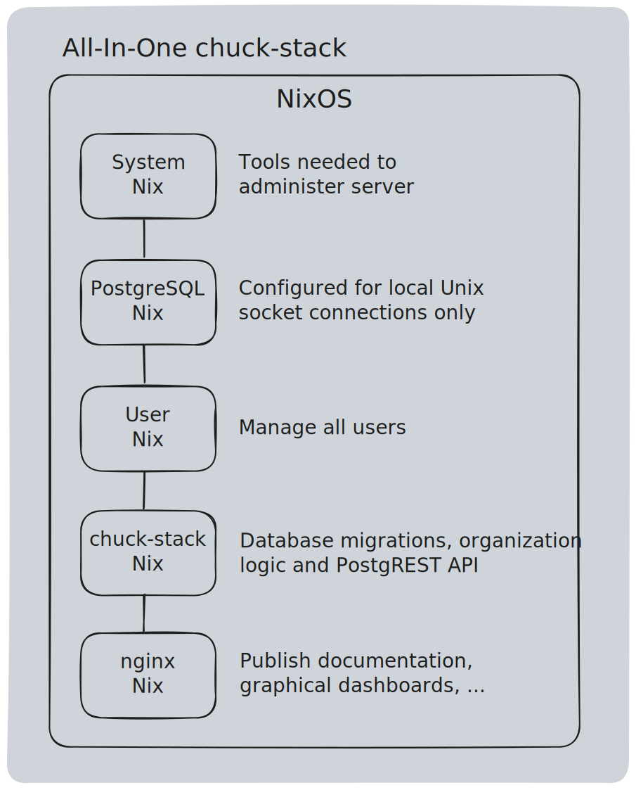

Introduction
What makes us special? conversational enterprise computing on an open source technology stack... We are tired of ERP's hitting organizations with thousands of barely relevant fields that over complicate processes. We offer a better way for small and medium organizations to manage data, automate processes and build superclerk talent.
chuck-stack is a collection of:
...that puts self-help automation in the hands of the people who actually do the work. With the chuck-stack, everyday clerks use AI and well-formed work instructions to remove complexity and automate tasks. What was tedious becomes scripted. Scripts become menu options. Options connect to form data pipelines.
We transform 20+ person departments of clerks into 2-person teams of superclerks. We give operational managers the power to guide their teams with just a few words. We ensure those words are considered in every action.
We help organizations focus on what matters most - its people and value proposition to the world.
Purpose
The purpose of the chuck-stack is to help organizations:
- Increase operational and transactional velocity and efficiency (OTVE)
- Identify and deploy AI-enabled, self-service tools that drive innovation from everyone in your organization
- Build an internal and external community of support and innovation
If we succeed executing our purpose, we will give small and medium sized organizations a competitive advantage against both its peers as well as larger organizations.
Solution Summary
The chuck-stack consists of three parts:
- Collection of Tools: Linux, PostgreSQL, PostgREST, Nushell, AIChat, Zellij, plus more... that all come together to create a full-featured platform. There is no secret or proprietary sauce. Instead, it is pure open source synergy!
- Best Practices: make the chuck-stack vision possible. These practices include both organizational and technical topics.
- Application Framework: executing best practices with the above tools and teaching AI to automate the fundamentals of your organization.
Small and Medium Is Different
It is critical to note that small and medium organization application development is fundamentally different than single-purpose and web-scale application development.
- tools are different
- user needs are different
- developers are different
- deployment is different
- requirements are different
- user training is different
The majority of the web is filled with single-purpose and web-scale development practices. The world of small and medium organization data and process management is severely underserved. The chuck-stack aims to better support such an important group.
- Chuck Boecking
Education
The stack-academy exists to help your organization achieve success as quickly as possible. It's an online support infrastructure that teaches organizations how to install and use the tools, leverage best practices, and foster superclerk talent.
- Teach your technical staff to best introduce the tools with your existing infrastructure.
- Teach your operations team how to best prepare for AI automation and AI safety.
- Teach your users how to start thinking about automation in their role.
chuck-stack Customers
Deploying enterprise systems is not easy. Small and mid-sized organizations often need additional help to ensure success. We support two types of organizations:
- Integrators - organizations with the specialty of enterprise system deployment and support. These groups often have vertical market expertise that further assist their customers in rapid change management and technology adoption.
- End-users - organizations who will use the chuck-stack in its operations.
Both types of customers are vitally important to ensuring our mutual success. Both customers are welcome and supported in the stack-academy and in our community.
chuck-stack Guiding Principles
Here are the chuck-stack design and implementation first principles in order. If you cannot accomplish these principles, little else matters.
- Protect an organization's revenue stream and people! This needs to be leadership's mantra with any system change.
- Deliver enjoyable systems that a) put the right data in the hands of the right users, b) make the user's job as easy as possible, and c) help users prevent mistakes!
- Deploy infrastructure that is safe, reliable and performant - in that order! If a system is not safe, reliability does not matter. If it is not reliable, performance does not matter.
- Write as little code as is possible. Every line of code is a liability that will cost you in the future. It must be documented, tested, reviewed and maintained. If you can use an existing tool that meets the chuck-stack guidelines in place of writing code, do it!
- Support self service by giving superclerks the tools to automate tasks within their roles without direct intervention from IT!
Why chuck-stack is Important
We keep things simple! There is not much like the chuck-stack on the market. There is NO private equity or venture capitalist manipulating the market or creating a false sense of complexity in hopes of extracting customer profits and executing a windfall chuck-stack sale.
Instead, the chuck-stack is built on basic fundamentals to make the world a better place for organizations with a purpose. The fundamentals are pretty straight forward:
- Find good tools
- Publish best practices and welcome feedback
- Teach anyone who will listen
- Invest in people worthy of your time and effort
- Strive for continuous improvement
- Tell the truth
We believe in a cooperative approach to learning, support and innovation. We work off of principles, and we collectively create an open source platform that values simplicity, stability and self-service.
"Creative technicals using thinly veiled systems will dominate the next 10+ years. We must give users the tools to automate tasks within their roles without direct intervention from IT!"
- Chuck Boecking
Picture of Success
Imagine a world where your operations team writes work instructions and both your system and people magically execute those work instructions with near perfection. Imagine a world where IT no longer builds tools but instead helps people build logic themselves while ensuring everyone is bound by their roles. You do not need to imagine much longer.
How is This Possible
Modern AI has a magical ability to understand and use our language to offer valuable opinions and execute tasks. More specifically, it understands work instructions (role, task, and tool definitions), and it can help us automate tasks, increase velocity and improve efficiency.
Problem - Too Many Window and Fields
There is a big problem with enterprise applications (like ERP) built over the last 20 years. They are too slow in almost every way. The development tooling is too complicated. They bombard the user with hundreds of fields which often go unused. They are incredibly difficult to test. And, they create tension between organization users and leaders.
ChatGPT Showed Us a Better Way
ChatGPT re-introduced an amazingly simple yet effective user interface that offered one field: the command line. In the command line, you can type whatever you wish. ChatGPT is often smart enough to understand what you want and finds a way to help you - all from one field.
Simple Example
If you were to type the following into an AI chatbot:
show me the weather in Berlin and London
- The system is smart enough to look for existing tools that can offer real-time weather.
- It is smart enough to know that you want to call the get-weather-tool for all the listed cities.
- And, it is smart enough to format the output is a human readable way.
These concepts are true for most foundational large language models (LLMs) like Claude and ChatGPT.
Better Example
Let's apply this concept to a customer service representative (CSR). The following exchange naturally follows the above example:
- CSR: please create a new sales order for Fred Flintstone, and accept all defaults. Products include 5x 1x4x12, 20x 2x6x8, 50lb penny nails.
- System: Done. Your order number is 100775. It is currently drafted, and it can ship as early as tomorrow.
- System: Would you like to complete the order?
- CSR: Yes, and please text Fred confirmation.
- System: Done and done.
Get a Little Crazy
The reality is that a CSR that performs this task 50+ times a day will not be this conversational. They will develop codes to eliminate keystrokes. They will use a microphone when possible. The outsider looking in might not even understand the interaction because of all the abbreviated codes. That is OK. What matters is that the CSR and the system 1. share access to the right data, 2. makes his/her job as easy as possible, and 3. prevent mistakes.
This is just the beginning. There is no limit to the number of examples in an organization where someone wants to take a reasonably complicated process like order entry and distill it down to 5 or less bullets/interactions.
Not that Crazy
People and systems are getting smarter and more capable. What used to take a team of clerks thousands of hours can now be accomplished by one superclerk in tens of hours. Here is an example of what a superclerk can do:
psql -AXqtc -f query-invalid-customer-address.sql | get entries | aichat -r address-fix-role
The above command shows what can happen when you develop superclerks and you give them the right tools to fix 300k+ addresses:
- psql is a tool that will query the database.
- -AXqtc are the psql arguments that shape the data so that it can be parsed.
- query-invalid-customer-address.sql contains the query to get 300k addresses to validate.
- get entries is a nushell command that extracts the entries.
- aichat is a command that communicates with ChatGPT or Claude to perform AI work.
- -r is the aichat argument that allows the clerk to pass in the pre-existing work instructions that defines a valid address.
You do not need to understand the details of the above scenario; however, you DO need to understand that a single person (superclerk) can write the above one-line string to perform the work of hundreds or even thousands or people hours. This is the power of a purposeful organization using the chuck-stack to find and promote superclerks!
All You Need are Work Instructions
ChatGPT (and LLMs in general) are very good at understanding languages. This ability goes far beyond English and Spanish. SQL (databases) is a language. If you write it down, a LLM can understand what you want. This is true for both English work instructions and code like SQL, python and rust.
This brings us full circle back to the picture of success:
Imagine a world where your operations team wrote work instructions and your system and people magically executed those work instructions for you. Image a world where IT no longer builds tools but instead helps your people build it themselves while ensuring everyone is bound by their documented roles.
If you want to supercharge your organization by filling it with superclerks, do the following:
- Write down your work instructions.
- Mobilize your technology team to install self-help tools like the chuck-stack.
- Hire smart people to do smart work.
If you want to learn more, join the stack-academy.
Factors for Success
The purpose of this page (and its sub-pages) is to discuss the foundational beliefs and factors for chuck-stack success. We believe the following to be true. Our success depends on our ability to convince others to believe as well. The average person probably will not care much about the topics in this section. It is perfectly OK to skip this section if you are just looking to get started.
- The CLI represents a better way for small and medium organizations to manage data, automate processes and build superclerk talent. (CLI is Better)
- AI is powerful enough to transform the roles of IT, managers and clerks to deploy AI-enabled, self-service tools that drive innovation from everyone in an organization. (AI Changes Things)
- We can combine off-the-shelf tools and best practices to create and deploy an application framework that represents a significant reduction in both cost and complexity. (Value Matters)
- We can manage the cost of AI inference so that it remains less than 100% (a fraction of the cost) of the displaced labor. (Know Your Audience)
CLI Is Better
Better than what? Better than a mouse and a webpage...
We are making an argument that the CLI is a better option for managing data and processes in small and medium organizations. Our success depends on it. We guess that up to 90% of the people who read this sentence discount the CLI's validity. This is OK because by the time they realize they were wrong, and they will be too late to the game and will have suffered:
- abuse of the perpetual right-click copy/paste to move stuff around.
- being blamed for why something is not done yet.
- paying for tools that are otherwise free.
- losing their job at the hand of someone who figured out a better way to get something done.
The modern web browser is an impressive invention. It is pretty and engaging. It is the default tool to browse information the internet. However, it is a data trap. It silos data inside the browser with virtually no way to automate tasks without going to heroic efforts and/or paying for more tools.
Grunts and Nudges
What has only two forms of communication (grunts and nudges)? A mouse...
Before we make our case for the CLI, we feel compelled to express the challenges that plague us today.
Using a mouse to perform work in a web browser is quite possibly the lowest form of communication prevalent in our society. You can click (or grunt) and you and drag (or nudge). Imagine if your primary means of communication was grunting and nudging people around. It is hard to imagine because it represents such a departure from the rich language we have developed to express ourselves.
Creating mouse oriented user interfaces often doubles or more the code complexity. Creating business logic is easy. Creating web-based user interfaces is extremely difficult.
The pain goes even deeper. Anyone who is responsible for testing mouse oriented applications can attest to just how hard it can be to assert it works as expected.
Why have we adopted this style as a primary means of communication with our computer? We do not know; however, We are done! No more... There is a better way!
30+ Years of CLI
There is a reason a great percentage of the world's developers abandoned Windows for Apple and Linux. They realized there is power in a CLI (command line interface) where you can communicate your instructions in a language that is orders of magnitude more expressive and more capable than a mouse. This is hundreds if not thousands of times more expressive... In the right hands "expressive" mean "powerful" and "capable".
We understand it takes time to learn different expressions; however, we also understand that it is worth it. The world's developers voiced their preference.
In the last 30 years...
- A rich ecosystem of commands emerged in the CLI. This means you have a menu of tools to perform everyday tasks.
- A data pipeline convention emerged as a way to connect the results of one command as input to the next.
- Commands were combined to create scripts.
- Scripts were piped together to automate processes.
Reference: CLI is Better Blog - story of searching legal contracts for tasks and dates.
AI Changes Things
What does AI change? It gives humans the ability to know and do more. It is powerful enough to change how IT thinks about and deploys applications. It is powerful enough to give everyday clerks the ability to solve their own problems. It is powerful enough to know when these solutions extend beyond the intended roles.
Said another way, AI is powerful enough to transform the roles of IT, managers and clerks to deploy AI-enabled, self-service tools that drive innovation from everyone in an organization.
AI enhances our ability to communicate across multiple languages. One of the big challenges of using a CLI to converse with your computer, data or processes is the learning curve of the CLI way of thinking. AI removes this hurdle, and it enables the average person to accomplish what developers already know. It translates human language to CLI language. Said another way, AI helps turn clerks into superclerks.
Now, imagine if clerks started using CLI tools to perform everyday tasks. The smart clerks started creating scripts to automate tasks. The really smart clerks started connecting/piping scripts together to perform workflows. If only IT has the ability to put these tools in the hands of clerks.
Imagine if clerks could use the existing work instructions to power AI to automate their tasks. Imagine if the person actually doing the work had the ability to both automate it and confirm its accuracy.
Hmmm...
Value Matters
Value matters to whom? We believe that some people and organizations will fight to be relevant by adding value to themselves and those around them. As AI encroaches upon thought work and eliminates responsibilities, some will not sit idly by. They will look for opportunities to use AI for their benefit.
The chuck-stack success will depend on our ability to demonstrate human value in our changing world. It will depend on our ability to orchestrate off-the-shelf, synergistic tools to solve problems faster than ever before.
Know Your Audience
The right people can do more with less (superclerks).
It is important to state that creating tools for organizations is very different than creating tools for the consumer market. People in an organization have a job to do. They may perform the same tasks hundreds of times in a day. They repeat these tasks for weeks, months and sometimes years.
It is completely acceptable to take a moment to teach someone how to do something that a general consumer would have no ability to execute without training. When you think about the concepts expressed on this page, it stands to reason the some organizations and clerks will rise to the occasion and willingly attempt a better way to add value to themselves and this world.
As a result, you will have fewer people orchestrating more with fewer resources. Our 25+ years of ERP experience tells us this is more than reasonable.
Success Using Linux
We have already explained the importance of the terminal to our success. The purpose of this page is to describe how we plan to make that success easy, well understood, declarative and automated.
When the concepts in this page are fully implemented in the chuck-stack, this page will go away, and its contents will be move to other functional areas. Until then, this information represents our plan and our partial implementation.
User and Role Management
Our plan is to use a declarative approach to managing users and roles.
- SSH transports users to their terminal
- Nix-shell deploys the tools for that user's roles
It is worth noting that user and role management is shared in both Linux and PostgreSQL. While these responsibilities exist in both planes, they are not duplicated. Linux dictates role-based tool access and how the user connects to the database. PostgreSQL dictates data access inside the database.
SSH
SSH performs all user authentication and transport requirements. These requirements include security keys, passphrases and OTP multifactor authentication.
Nix-shell
Nix-shell provides the role-based access control to ensure users can only use the tools associated with their roles. Nix-shells are declarative; therefore, we use standard git workflows to add, review, manage and deploy role tool access. CI/CD practices automate deployment in an auditable and automated manner.
Here is a quick and dirty example of how you configure a new Debian server to use nix-shell. This trivial example goes a long way to show you the power of using well-understood tools.
sudo su
sh <(curl -L https://nixos.org/nix/install) --daemon --yes
exit # exit su
echo "ForceCommand /nix/var/nix/profiles/default/bin/nix-shell /opt/shell.nix" | sudo tee -a /etc/ssh/sshd_config
sudo systemctl restart ssh
wget https://raw.githubusercontent.com/cboecking/keys/refs/heads/main/id_rsa.pub
cat id_rsa.pub | tee -a .ssh/authorized_keys
sudo tee /opt/shell.nix << EOF
{ pkgs ? import <nixpkgs> {} }:
pkgs.mkShell {
buildInputs = with pkgs; [
# Add only the packages you want users to have access to
];
shellHook = ''
echo "Welcome to the restricted nix-shell environment"
# Add any initialization commands here
'';
}
EOF
Details:
- Once the above is performed, a new user is bound by what is configured in /opt/shell.nix.
- Nix-shell has a concept of a 'pure' shell that ensures no outside tools are made available.
- Nix-shell ensures the environment is configured and that file permissions are set to ensure application security.
The above example shows just how easily we can script with nix-shell to dictate what function calling tools are available to AIChat.
Success Using PostgreSQL
PostgreSQL plays a critical role in our success. How we plan to create that success is largely attributable to the documentation and practices of PostgREST.org. They paved a way to move user and business logic previously trapped in an application server to the database itself. They proved the concept was more than possible, it was actually advantageous.
When the concepts in this page are fully implemented in the chuck-stack, this page will go away, and its contents will be move to other functional areas. Until then, this information represents our plan and our partial implementation.
User and Role Management
User management plays a small part is how the chuck-stack operates. Almost all logic is tied to a role. PostgREST gives us a great roadmap for accomplishing this task.
Here is a quick description of how chuck-stack manages users and roles:
- Users will be created in PostgreSQL with no privileges.
- Users will be granted access to a PostgreSQL role.
- This concept is called impersonation where the user logs in and quickly moved to a role.
- After the login is complete, all authorization is performed at the role level.
Here is an example of impersonation:
create role some_role nologin;
grant usage on schema private to some_role;
grant select on private.stk_business_partner to some_role;
create role some_user_auth noinherit login password 'some_password';
grant some_role to some_user_auth;
psql -d some_db -U some_user_auth -c "set SESSION ROLE some_role" -c "select * from adempiere.c_bpartner limit 1"
If you remove the "-c ... set ROLE ..." command, the psql statement will fail with a "permission denied" error because the some_user_auth role does not have any privileges.
This example shows just how easily we can provide user management yet ensure that no user capabilities spill into role-based business logic.
It is worth noting that user and role management is shared in both Linux and PostgreSQL. While these responsibilities exist in both planes, they are not duplicated. Linux dictates role-based tool access and how the user connects to the database. PostgreSQL dictates data access inside the database.
Reference: PostgREST Authentication
Session Variables
A big requirement of enterprise systems is managing a user's context inside the application. The above example of switching from the user to the role is great for simplifying business logic; however, the system still needs to know what user performed what action.
The chuck-stack uses another concept from PostgREST to set session variables (context) using PostgreSQL's configuration settings. Here is an example where any business logic can check session variable details during a process.
CREATE OR REPLACE FUNCTION check_user() RETURNS void AS $$
DECLARE
email text := current_setting('stk.variable', true)::json->>'email';
BEGIN
IF email = 'some_joe@bad.com' THEN
RAISE EXCEPTION 'No, you are not allowed'
USING HINT = 'Some additional details about the situation';
END IF;
END
$$ LANGUAGE plpgsql;
Setting these variables during psql execution is easy (see success with Linux). Checking them during program execution is easy as demonstrated above.
SQL plus psql
The purpose if this section is to highlight that chuck-stack not only benefits from SQL (one of the technical world's most well understood languages), but it also benefit from the psql application. psql is powerful SQL application in its own right that has additional features for a) helping users do their jobs and b) helping the stack protect its data and processes from attach (like sql injection).
SQL Encapsulation
The PostgreSQL Convention highlights how we use two schemas to provide :
- a public (
api) facing schema to allow for direct interactions via the CLI and REST and - a private (
private) facing schema to allow to data representation encapsulation.
Configuration Management
The chuck-stack uses sqlx-cli to track and deploy SQL migration scripts. Here is a sample todo chuck-stack migration repository. It is part of the chuck-stack todo sample application.
Note that we use a NixOS service to manage and automatically deploy migrations when needed.
Technical Details and Examples
The purpose of this section is to highlight simple examples that demonstrate the concepts described above.
References:
From inside psql without modifying postgresql.conf:
select set_config('test.test.test.one','truly',false);
select current_setting('test.test.test.one',true);
current_setting
-----------------
truly
From inside psql after modifying postgresql.conf to set test.chuboe='init':
select current_setting('test.chuboe',true);
current_setting
-----------------
init
select set_config('test.chuboe','post-set',false); --false says available outside of trx but only in session --true says only in trx
set_config
------------
post-set
select current_setting('test.chuboe',true);
current_setting
-----------------
post-set
From command line - set temporarily after postgresql.conf updated (but postgresql.conf edit not needed)
psqli -c "SET test.chuboe = 'some-other'" -c "select current_setting('test.chuboe',true)"
current_setting
-----------------
some-other
From command line - random parameter - not set in postgresql.conf
psqli -c "SET gabe.chuboe1 = 'some-other1'" -c "select current_setting('gabe.chuboe1',true)"
current_setting
-----------------
some-other1
Success Using API
We have already explained the importance of the terminal to our success. The purpose of this page is to describe how we plan to extend program logic and functionality beyond the terminal using API.
TODO: add link to architecture page to show how API fits into the picture.
When the concepts in this page are fully implemented in the chuck-stack, this page will go away, and its contents will be move to other functional areas. Until then, this information represents our plan and our partial implementation.
Terminal plus PostgREST
In the previous success pages, we discussed how PostgREST helped us understand a better way to manage data and processes directly inside the database. We believe we can not only use PostgREST's practices but also use PostgREST itself. If we can, this means that any business logic created in the chuck-stack will automatically flow through to an API as well (possibly for free).
Said another way, You can gain access to your data and processes from more than just a terminal. This concept is important when integration with 3rd party system, which frequently happens in ERP implementations.
Here are our thoughts:
- PostgREST recommends that you create both a private and public schema.
- We plan to do the same.
- The private schema is where you keep your normalized data. It is considered private because users do not always need to know how it is stored.
- The public schema is where psql (your chuck-stack terminal) and PostgREST connect. It is considered public because it is the outside representation of your data and processes. Sometimes there is a difference between private and public for good reasons.
- We believe we can use the same public schema to feed both the chuck-stack terminal as well as PostgREST.
- We believe we can write one set of business logic that supports both access points.
- To accomplish this goal, we believe the chuck-stack simply needs to mirror the application's context to be the same as PostgREST.
If we can accomplish this goal, it will be quite magical.
Getting Started
Getting started looks different depending on your goals.
If you goal is to understand the project itself, start here:
If your goal is to understand what is needed for us to succeed, view the success factors
If you just want to start playing with the chuck-stack, read below. If you need help, join the stack-academy.
Start with AI
First, get your API key. Then, start using it to explore!
Get Your API Key
You need an API account from one of the foundation LLM providers, including:
- Anthropic/Claude - preferred
- Gemini
- OpenAI
There is a difference between the flat-rate, consumer-facing website offerings (like OpenAI's ChatGPT) and a pay-as-you-go API service. You need the API version of the service. Here are the reasons:
- One reason is that you will most likely not spend the equivalent $20/month when using the API - at least not in the beginning.
- The second reason is that you need API access to accomplish the goals of this stack.
You can use a different LLM provider if you wish. Here is a list of other options: (see the multi-platform section).
Note: It is possible to run AI locally using tools like ollama; however, the models you can run locally are generally not as powerful as the ones listed above. For that reason, we will treat local AI as a more advanced topic.
Ask AI First
One key to your success is to get in the habit of asking AI before you search on Google. Soon, you will have a keystroke that will open an AI prompt from anywhere on your computer. Asking AI for help will become second nature. You want to create this habit as quickly as you can.
Here is an example prompt where AI is both fast and succinct:
- please provide succinct step-by-step instructions for accessing a linux terminal on a new chromebook
Here was the response:
- Open Settings
- Click "Advanced" in the left sidebar
- Select "Developers"
- Turn on "Linux development environment"
- Click "Install" and wait for the process to complete
- Once installed, open the "Linux Terminal" app from the launcher
- The terminal will open, ready for use
If you have additional questions, simply ask and AI will provide additional details.
Get Linux
You need some version of Linux available to you. We prefer you run Linux as your primary desktop for a variety of reasons; however, we understand that time and cost play a role in your decision.
To make getting started as easy as possible, we created a list of options beginning with the easiest and most affordable ones first:
- Chromebook - most modern Chromebooks make it easy to gain access to a Linux terminal directly from your menu. See the above example of asking AI to help enable Linux in a Chromebook.
- Windows - offers WSL (Windows Subsystem for Linux).
- Buy a new Linux computer:
- System76 is an amazing hardware provider and a supporter of Linux. You can buy a mini, desktop or a laptop with Linux already installed. They typically offer a $600 USD mini that can be used to get started. System76's commitment to Linux and its usability cannot be emphasized enough.
- Framework is an amazing hardware provider; however, please understand this company is a bit different. The upfront cost is higher than a mass-produced Chromebook; however, you purchase something that will last longer. Here is a great review and explanation regarding why Framework laptops are worth considering. Framework seems to be honest and transparent. They own and fix their mistakes in our experience.
- Install Ubuntu, PopOS or Debian on an existing desktop or laptop.
- Mac - is Unix, which is close to Linux. Most of what you can run on Linux can also work on a Mac.
- Rent Linux - cloud providers like AWS, Digital Ocean, Linode, ... will host Linux for you for under $10 USD per month.
Which Linux Version
- PopOS is our preference for laptops and desktops. PopOS is an Debian variant.
- Debian is our preference for servers, containers and headless virtual machines.
- NixOS is a more challenging and more capable option.
- Ubuntu is also acceptable. Ubuntu is a Debian variant.
You can use any almost distribution of Linux you wish. The chuck-stack team recommends Debian-based and Nix as part of the official stack.
Rust Tools
We have a strong preference for tools written in the Rust language. As a result, you need to install the Rust tools. We will use Rust to install applications like AIChat - see below.
AIChat
AIChat plays a big role in the chuck-stack. You want to be able to launch a terminal and use AIChat with a single keystroke. Doing so goes a long way in accomplishing the above goal of asking AI before Google.
Examples to come soon... Join the stack-academy for quicker options to get started.
PostgreSQL
PostgreSQL also plays a big role in the chuck-stack. You want to be able to be able to use psql (PostgreSQL's command line tool - CLI) to connect to a local database and issue a few commands.
Examples to come soon... Join the stack-academy for quicker options to get started.
Best Practices
Now that you are proficient with AIChat, lets start incorporating best practices into your use of AIChat.
You need to practice your best practices in Obsidian. Get comfortable with markdown, the listed Obsidian plugins, and how to document your work instructions.
More to Come...
We are just 'geting starting'. To learn more faster, join the stack-academy. This is an important step to realizing the vision! This is something you can start right now!
Stack FAQ
The purpose of this page is to answer frequently asked questions (FAQ) about the chuck-stack.
Is chuck-stack really the name of the project?
Yes and no... Naming a project is hard. chuck-stack is a good starting name given that Chuck Boecking has spent the last 25 years immersed in small-to-medium business ERP, data management, and IT. This project started as result of what we believe to be safe, usable, reliable and performant. If the community believes there is a better name to represent this project, then we will change the name accordingly. That will be a good day!
How do we choose stack components?
See stack-tools.
What are the chuck-stack tools?
See stack-tools.
What are the project guiding principles?
See chuck-stack guiding principles
What is the stack-academy?
See the stack-academy page.
What is a Superclerk?
See superclerk.
Saving Heartbeats
What does this mean? We have a precious few moments on this Earth. We will do everything in our power to preserve your time so that you may spend your remaining "heartbeats" on something that really matters to you.
What is the current status of chuck-stack?
The short answer is: We have been deploying the chuck-stack for more that 10 years. Some parts of the stack are in early alpha. Other parts reached production 15 years ago. Here is a more detailed answer:
- iDempiere ERP is the oldest member of the stack. We started deploying it on Linux as early as 2001.
- We started deploying PostgreSQL on Linux in 2011.
- Metabase BI has been in production for us for the last 4 years.
- Nushell has been in production for us for the last 2 years.
- dbt has been in production for about 6 months. Note that we have used various ETL tools for the last 10 years.
- The AI tools like aichat, are relatively new. Being able to use these tools to change how people interact with data is also new. This style of UI development is in alpha.
Is chuck-stack an ERP?
No, not yet. Here are our thoughts about becoming an ERP:
- The biggest hurdle to becoming a viable ERP is data entry.
- It is common for an order header to have 90+ columns.
- Historically, ERP systems burden users with a sea of fields (representing the 90+ columns).
- We do NOT believe this is the best approach because a user will only need to modify three or so fields in a newly drafted order. The remaining fields should just default from either the Business Partner settings or recent orders. Said another way, changing many defaults is the exception, not the rule.
- Improving the user experience for the above order scenario is currently our biggest challenge.
- Another challenge will be to provide a viable accounting system. In the short term, we will use iDempiere. In the long term, we will use AI and available references to create an accounting system that best supports our stack. Accounting is one of our strongest areas of our ERP practice.
What is capability sandboxing?
Capability Sandboxing is the act of defining roles so well that you can consider them to be a contract and enabling the system to ensure role created automation stays within the confines of the contract.
What are the most important pieces of the chuck-stack application framework?
The two most important pieces of the chuck-stack application are workflow and attributes.
- Workflow is critical to data management. However, workflow is notoriously difficult. The concepts can be difficult to learn. The applications are often difficult to install and maintain, and they are either too complicated or overly simple. It is incredibly difficult to create a workflow architecture that is both generic enough and easy enough for broad adoption. AI will change the workflow landscape. What was previously tedious, is becoming a conversation.
- Attributes and attribute sets are critical to data management. Being able to tag anything with an attribute, or a set of attributes is one of the most common actions in data management.
Why is the CLI so Important?
chuck-stack Tools
The purpose of this page is to help you understand what tools we choose to include in the chuck-stack and why we chose them. The chuck-stack has been cultivated over the last 25 years. Much effort, testing and production use has gone into this list of tools and its selection criteria.
Selection Criteria Summary
When choosing our stack tools, we:
- Focus on commonly used and well understood tools to make AI augmentation easier. The better AI understands a tool, the more AI can do the work for you.
- Choose tools that build on one another: Incus => Linux => PostgreSQL => PostgREST => Nushell => AIChat => Zellij...
- Select tools that allow unlimited usage and scale massively.
Selection Criteria Details
Here are the more detailed guidelines for inclusion:
- Commonly used - and well understood to make AI augmentation easier.
- Open source - or at least as open as possible.
- Start simple - easy to understand and reason about. Nix pushes this concept a little (or a lot); however, the power and simplicity it creates is worth the extra effort.
- Basic functionality - supports basics like CRUD (create, read, update and delete) with minimal effort.
- Kind educator - needs someone in the community who makes the technology kind to the target audience.
- Kind integrator - needs someone local to you digitally to help you leverage the tool.
- Synergy - supports other tools in the stack. Example: runs on or integrates with PostgreSQL.
- Simple architecture - not overly complicated relative to the tool's purpose.
- Enterprise scalability - it needs to scale to support an organization of at least 1,000+ across multiple continents.
- Enterprise testing and deployment - it needs to support team development where improvements can be development, tested and accepted in dedicated environments and easily migrated to production using CI/CD concepts or scripts.
- Deployment safety and simplicity - needs to create safe applications that deploy with minimal dependencies.
- Safe, reliable and performant - if a system is not safe, reliability does not matter. If it is not reliable, performance does not matter.
- Command Line Interface (CLI) centric - we love cli interfaces because they are accessible from anywhere.
- REST centric - we love scriptable interfaces that can be called from anywhere (not just the cli).
- Globally deployed - supports any organization in an corner of the world on almost any hosting platform.
Preference for Rust Language
You might observe that we have a preference for applications written in the Rust language. This preference is intentional for the following reasons:
- Rust promotes writing safe applications by eliminating the majority of problems that have plagued developers for the last 30 years.
- Rust applications typically compile down to a single binary.
- The Rust tool chain is simple to understand and execute for both application development and deployment.
- Rust applications tend to perform better and faster than their counterparts.
- Rust supports full stack development thus minimizing the number of experts needed to solve a problem.
- The Rust community practices and values align with the chuck-stack community. See our code of conduct as an example.
Critical Path Tools
The following tools are in the chuck-stack critical path to success. They solve a core need in the chuck-stack, and they create synergy with each other.
- Incus (virtualization) - container and virtual machine (VM) tool to develop, test and deploy IT applications.
- Linux (compute) - best tool to run applications on just about any platform in the world.
- PostgreSQL (data) - best tool for managing "data" database with best performance and enterprise features.
- PostgREST (API) - PostgreSQL tool for exposing an OpenAPI compliant REST interface directly out of your database.
- aichat (AI) - command line AI chat and execution tool that include saves sessions, rag, function-calling and more.
- Nushell (system and data) - Terminal shell with designed to understand and manipulate structured data.
- Zellij (UI) - terminal workspace environment for managing information and transactions.
- Git (code, information, collaboration) - best tool for managing information, instructions and discussions. It provides most options for AI amplification.
- Obsidian (knowledge) - best tool to authoring text.
Other Tools
Other tools play a supporting role in the chuck-stack and an organization's success.
Incus - Virtualization
We are leading with Incus and virtualization because we feel that virtualization is a critical part of your stack. You can use any virtualization tool you wish. It does not "need" to be Incus. You can use AWS, GCP, Azure, etc... You simply need some form of virtualization.
Page Contents
- What is Incus
- Why we love Incus
- Types of virtualization
- Incus relation to Nix
- Incus relation to Docker
- Picture of success
What is Incus
Incus is a Linux application that allows you to take any single computer or collection/cluster of computers and turn them into a virtualization platform.
Why We Love Incus
There is a long list of reasons why we love Incus:
- It is commonly used and well documented.
- It is open source.
- You can get up and running with Incus in a meaningful way in minutes.
- It does its job (virtualization) quite well.
- It helps you deploy applications in a manner that is safe, reliable and performant.
- You can start with a single computer and naturally grow to a global cluster.
- It uses commonly understood Linux and networking concepts.
- It has an incredible educator in Stéphane Graber.
- It has a vibrant online support community.
- It supports multiple types of virtualization in a single application: Docker, Linux containers, virtual machines and Nix.
- It is both CLI and API first to help support AI and automation.
- It offers a reasonably simple architecture given the nature of its purpose.
- It scales massively for small to medium organizations.
- It can be deployed in every corner of the world.
- It can be deployed in hybrid cloud scenarios.
- And, most importantly it has great synergy with the rest of the chuck-stack.
Types of virtualization
One of the greatest benefits of Incus is that it gives you so many virtualization options in a single package. Incus maintains current container and virtual machine images for commonly used Linux operating systems including: Debian, Ubuntu, NixOS, Alpine, Arch, etc... You can add DockerHub as an Incus image repository; therefore, you can launch almost any image with almost no additional effort, infrastructure or nesting when using Incus.
Incus has Projects
You can use projects to keep your Incus server clean by grouping related instances together. In addition to isolated instances, each project can also have specific images, profiles, networks, and storage. This helps organizations support the growth of organizations in an organized manner.
Incus Relation to Nix
Nix is a compelling option for virtualization in some specific circumstances. If the chuck-stack already uses Nix, why add Incus in addition to Nix?
Here are our thoughts:
- Nix is appreciably harder to learn and get up and running as a virtualization platform.
- Incus covers many more virtualization scenarios than Nix.
- Nix is a great virtualization solution when you need a specialized, high-volume and resource sensitive application hosting solution. Replit's use of Nix is a good example of when Nix is preferable. (Quick link...)
- A Nix solution can easily be deployed inside Incus.
Incus Relation to Docker
Docker is a compelling option for virtualization. Here are the reason we prefer Incus over Docker:
- Incus gives us a single tool to deploy and manage almost all virtualization scenarios.
- Docker is great at application deployment. We need more than just application deployment.
- Incus covers more virtualization use case scenarios than Docker. For example: we need semi-permanent instances for long running applications like PostgreSQL. Incus provides this capability with no additional effort.
- Incus supports running Docker containers without needing a dedicated Docker environment.
- Note: Incus does not support Docker Compose yet.
Picture of Success
Here is what we want from incus for small organizations wanting to become bigger ones. What we want you to know is that you can start with minimal effort and grow to a massive scale on the same tool.
Toe in the Water
You can install Incus on almost any size and shape of Linux machine with minimal effort. With this minimal install, you can:
- fire up multiple instances (container or virtual machines) within seconds using most major Linux distributions
- create snapshots
- restore from snapshots
- share images with other incus servers
We encourage you to try Incus online now.
First Cluster
You can create your first cluster from any three or more Linux machines of any size and shape with just a few steps. With a cluster and minimal effort you can:
- increase capacity
- create redundancy
- move instances from on server to another to support always up maintenance
- need more compute power, add more nodes...
Second Cluster
With a little more effort and expense, you can create a cluster with:
- distributed storage to allow for hot swapping instances between nodes
- distributed network overlay implementing advanced networking/ACL capabilities
Hybrid Cluster
You can move one cluster to a data center. You can add a second machine or cluster locally. You can share images between these clusters. This hybrid approach helps your team maximize local hardware and cost reductions while using the same tools to administer your entire infrastructure.
Start Small Finish Big
The purpose of the section is ensure you understand that the smallest amount of effort will get you started in a direction that will grow with your organization in a linear and predictable manner.
Hardware Thoughts
The purpose of this section is to record thoughts and examples related to hardware. You can start with any hardware to validate Incus capabilities. If you want to apply a budget, here is an example first cluster:
- Start with three system76 meerkat tall each with the following:
- about $600 to start and $1K each as suggested below.
- about 12 cores (i5 for example)
- 32GB memory
- 500GB PCIe4 drive
- 4TG SATA SSD additional drive
- 2.5 GbE LAN additional port
- Note: always buy what you can afford at the time. If you can go with 64GB of memory then do so. Bigger drive, then do so...
- Note: your AWS bill will quickly grow to be more than $3K in a short period of time. Every AWS server has three costs.
- EC2 server
- EC2 drive - You can assume the AWS drive and shapshot storage costs will be about the same as the server cost itself
- S3 snapshot storage
- Start with three SuperMicro 1U or 2U servers.
- TODO: show minimum viable 1u 3-node cluster worthy of placing in a data center
- TODO: show powerful 2u 3-node cluster worth of placing n a data center (expected to be about 4x the cost of the minimum 1u)
Linux
Linux is a well understood and documented operation system. Its benefits are equally as well documented; therefore, we do not need to attempt to repeat them here. However, it is important to discuss why we love Linux for the chuck-stack.
Why We Love Linux
- It is commonly used and well documented.
- It is open source.
- It is easily accessible from anywhere in the world.
- Its accessibility is secure and well vetted.
- It has a vibrant online support community.
- It makes the applications we need to do our jobs immediately available.
- It can be deployed in every corner of the world.
- It can be deployed in hybrid cloud scenarios.
- It is CLI first to help support AI and automation.
- It offers a reasonably simple architecture given the nature of its purpose.
- It scales massively for small to medium organizations.
- It does its job (compute) quite well.
- And, most importantly it has great synergy with the rest of the chuck-stack.
Linux Distributions
The chuck-stack standardizes on two distributions of Linux:
- Debian
- NixOS
Debian
Debian is a general purpose Linux distribution. It has been around for a long time. It is community driven. It works great on the server and the desktop. It is a cornerstone for the Linux community.
Nix
Nix is a package manager available to almost any Linux distribution including Debian. Nix's most remarkable feature is the ability to create reproducible builds and deploy reproducible environments through its declarative language.
The power of Nix is most easily found in two ways:
- NixOS - is a specific distribution dedicated to the Nix package manager.
- nix-shell - is a feature for creating terminal shells with specific packages anywhere Nix is installed.
The chuck-stack make extensive use of both NixOS and nix-shell because they give us:
- A menu of deployment options that can be pieced together to create larger and more capable systems
- A deterministic way to deploy 'all' changes or 'none'
- Enhanced disaster recovery options
- Simplified security, audit and maintenance
- Simplified environment management
- The ability to deploy a system without writing code
References:
- See how NixOS is used in the chuck-stack architecture
- Nix explained - provides an overview of the Nix ecosystem
Linux Desktop
The chuck-stack standardizes on two Linux desktops:
- PopOS Shell (Cosmic)
- Gnome
PopOS Shell
We are most excited about the PopOS shell desktop, and we have used it for more than 2 year; however, it is currently in transition from gnome-based to an independent, pure-rust desktop. Because of this transition and the instability the transition creates, we also support Gnome.
Gnome
Gnome is a good and well understood Linux desktop.
PostgreSQL
PostgreSQL is an open source database, and it is quite possibly the best general purpose tool for managing data in the world. We realize this is a bold statement; however, after almost 30 years in mid-market ERP (Enterprise Resource Planning), we know a thing about managing data. PostgreSQL is our preferred tool in its category for some very good reasons.
Page Contents
Why We Love PostgreSQL
The list of reasons we love PostgreSQL is long.
- It is commonly used and well documented.
- It is open source.
- It is easily accessible from anywhere in the world.
- Its accessibility is secure and well vetted.
- It has a vibrant online support community.
- It makes the data we need to do our jobs immediately available.
- It can be deployed in every corner of the world.
- It can be deployed in hybrid cloud scenarios.
- It is CLI first to help support AI and automation.
- It offers a reasonably simple architecture given the nature of its purpose.
- It scales massively for small to medium organizations.
- It does its job (data) quite well.
- And, most importantly it has great synergy with the rest of the chuck-stack.
Here are some bullets that are unique to PostgreSQL that make it significantly better than its peers for the chuck-stack.
- It can hold almost any type of data: relational, GIS, vector, document, json, and more...
- It is not enough to simply say it can hold this data - it is better than almost all of its peers who often specialize in these types of data.
- Data replication is predictable.
- Data replication is configurable (streaming vs logical).
- Data backup strategies are numerous, robust and well documented.
- There are PostgreSQL drivers, adapters, connectors for almost every major platform (OS and application).
- It is fast!
- It can read from many foreign data containers via FDW (Foreign Data Wrappers) - see the list.
PostgreSQL Primer
Content below this section is intended to provide reference material that gets you up and running with PostgreSQL as quickly as possible.
Installation
There are two scenarios when you want to install PostgreSQL related to chuck-stack.
- Server - Production or UAT/Test environments running NixOS
- Local - development environment running any Linux distribution where Nix is installed
Server Installation
The chuck-stack uses NixOS to manage server packages and configuration. Here are two Nix configuration files that work together to install and configure PostgreSQL for the chuck-stack.
- postgresql.nix - base PostgreSQL installation
- stk-todo-app.nix - extends the base PostgreSQL installation with a simple todo application.
Local Installation
The chuck-stack uses the Nix package manager's nix-shell feature to deploy and configure a local base PostgreSQL installation. Here are two different examples of nix-shell installing and configuring PostgreSQL.
- Basic shell.nix - performs the most basic PostgreSQL install
- chuck-stack todo test shell.nix - installs PostgreSQL and configures it with a specific database and runs database migrations. This files is used as part if the stk-todo-app-sql test suite.
Installation Notes
Notes about installing and using PostgreSQL:
- It is sometimes desirable to install multiple 'clusters' of PostgreSQL on a single server. This is especially true when you are first learning the chuck-stack or you are hosting multiple small databases.
- The above nix-shell local installation instructions show you how to create a PostgreSQL cluster in a specific location so that you can create multiple clusters if needed.
- As a general rule, we will disable TCP access to PostgreSQL to maximize security. You should only enable TCP access when you have a good reason to do so.
- Once you have created a database 'cluster', you can then create one or more 'databases' inside that cluster.
- It is important to note the database needs of a small business with just a few users are different than the needs of a medium business with hundreds or thousands of users. We will start small and finish big.
PostgREST
PostgREST is a secret weapon that allows us to build a fully-qualified and secure REST API directly on top of a PostgreSQL database schemas and users/roles. If you can build a good database with functions, you can build a good REST API.
Why We Love PostgREST
The list of reasons we love PostgREST.
- It is an active project, and it is well documented.
- It is open source.
- It is easily accessible from anywhere in the world.
- Its accessibility is secure and well vetted.
- It has a vibrant online support community.
- It makes the data we need to do our jobs immediately available.
- It can be deployed in every corner of the world.
- It can be deployed using a single file.
- It can be deployed in hybrid cloud scenarios.
- It is API first to help support AI and automation.
- It offers a reasonably simple architecture given the nature of its purpose.
- It scales massively for small to medium organizations.
- It does its job (data access) quite well.
- And, most importantly it has great synergy with the rest of the chuck-stack.
PostgREST adds no additional logic to an existing PostgreSQL schema. This means that you can create a well thought out public database schema and expose it via two different access protocols (REST API and SQL) without duplicating any logic. This concept is important because:
- You minimize the number of experts required to support your platform. SQL in general and PostgreSQL specifically is extremely well known by both humans and AI. The more logic you can create in PostgreSQL, the faster and more efficient you team will become.
- SQL represents one of the most expressive data languages. Previously, SQL was removed as a viable public API because of the fear of duplicated access/security logic. This one point is such a game changer in how you thing about managing and accessing data.
- PostgREST enables moving user/role management and security policies to the database where all application access rules from all platforms (API + SQL) are enforced from a single location.
- User/Role level management at the database is fast and efficient because PostgreSQL user/role management is so expressive and it is so close to the data.
- REST API + SQL cover the fast majority of tools that need access to application logic. Said another way, most applications cannot expose SQL as an interface because traditional applications keep business and security logic in the API layer. As a result of using PostgREST, you maximize the tools that support small and medium organizations by allowing applications to use both API and SQL without any degradation in application quality or complexity.
AIChat
AIChat is an all-in-one AI CLI tool that helps you interact with the world's most popular and powerful LLMs. It combines a chat-REPL, shell assistant, RAG, agents, and an API in a single AI tool.
Discussion points:
- Why we love AIChat
- Why AI + CLI matters so much
- AIChat solution examples
Why We Love AIChat
- It is well documented.
- It is open source.
- It is easy to learn and use in a matter of moments.
- It is easily accessible from anywhere in the world.
- It is an active project adapting to a rapidly evolving technical space.
- It makes the knowledge we need to do our jobs available where and how we need it most.
- it is an emerging tool the shows signs of a vibrant and well supported community.
- It can be deployed in every corner of the world.
- It can be deployed in hybrid cloud scenarios.
- It is CLI first to help support automation through AI.
- It make solutions created from the CLI available via the web and an API.
- It offers a reasonably simple architecture given the nature of its purpose.
- It scales massively for small to medium organizations.
- It does its job (AI) quite well.
- And, most importantly it has great synergy with the rest of the chuck-stack.
Why AI + CLI Matters
The vast majority of AI tools created in the last year are deployed via a webpage. We understand why people make this choice; however, we believe it is the wrong choice for small and medium organizations. Applications in webpages effectively trap knowledge and data. They create silos, and the amount of tooling needed to connect data between webpages is enormous. There is a much better way!
The CLI represents the single greatest superpower to help users create automation and data pipelines.
AIChat - More than a CLI
AIChat provides three features that are critical to our success:
- AI through the CLI - which is the most obvious feature
- AI through a Webui playground - which gives you an html view into the same tools created via the CLI
- AI through an API - which gives you the ability to use your previously created AI automation from other tools as well
A Common Workflow Challenge
When supporting small and medium organizations, we are often challenged with a question that begins with: "Can you do ...". The answer is often: "I do not know; let me try...". Here is a common scenario when exploring such a solution:
- Prove that AI is capable of some task. This is often most easily performed using AIChat through the CLI (either in the REPL or as commands). Once you believe you have a path to success, you want others to quickly try it out.
- You send a link to AIChat's webui playground that is pre-loaded with the role (settings) and RAG (knowledge) that demonstrates the to-be solution so that all can easily see.
- You update other tools to call AIChat's API to extend your solution into more workflows.
Contract Example
Here is a more concrete example to the above challenge. Let's say your organization works with legal contracts that have both dates and tasks associated with their execution. Let's assume you currently spend 25 man hours per month reviewing contracts and transcribing them to tasks on a calendar with a 94% historical accuracy. Can you do better? Here is an approach to exploring a solution:
Before we go into the solution details, I want to point out a theme in the below bullets. You create something once in a low cost and iterative manner, and you use it in multiple ways. One tool creates many options. This is how clerks become superclerks.
- Find an example contract. This will most likely be a PDF.
- Use the pdftotext CLI tool to extract the contents of the contract from the PDF to TXT:
- pdftotext -layout somecontract.pdf > somecontract.txt
- Pass the contract into AIChat along with some basic work instructions
- aichat -f somecontract.txt -- find all tasks with their associated deadlines.
- Iterate on your work instructions until you get something that looks like a collection of tasks + deadlines from AIChat.
- Create a new AIChat role named "contract task extractor" and save your refined work instructions in that role so that others can use your newly created skills and knowledge.
- aichat
- > .edit role "contract task extractor"
- Deploy the AIChat webui playground and share your newly created AI role with other people.
- Make your role available to other applications using AIChat's API so that all your tools can extract tasks and dates from contacts as well.
Contract How To
How does someone learn to perform the above steps? More specifically, how did we...
- know that pdftotext would extract out text from a PDF? We asked AIChat.
- find the best prompt to extract out dates and tasks? We asked AIChat.
- figure out how to create a new role in AIChat? We asked AIChat.
You are probably starting to see a pattern....
Nushell
Nushell is a Linux terminal shell that makes processing and visualizing data easier. For the chuck-stack, Nushell excels beyond others because of its preference for and usability with structured data and data pipelines.
Why We Love Nushell
Here are the reasons we love Nushell:
- It is an active and welcoming project, and it is well documented.
- It is open source.
- You can get up and running with Nushell in a meaningful way in minutes.
- It does its job (data pipelines) amazingly well.
- It makes the data we need to do our jobs immediately available.
- It makes creating modules, scripts and plugins significantly easier (as compared to bash and other shells).
- It visualizes structured data in a terminal better than just about any other tool.
- It has great synergy with the rest of the chuck-stack.
Notes and References
- Nushell has not reached production stability yet; although, it is close. The Nushell team still introduces frequent breaking changes in an effort to enhance consistency and improve usability.
- Nushell compliments PostgreSQL in that Nushell can perform many of the same data tasks as PostgreSQL without requiring data first be inserted into a database.
- Said another way, Nushell gives you many of the same data processing abilities prior to persisting it in a database.
- Nushell also makes persisting data in PostgreSQL easier.
- Nushell plugin for visualizing and plotting data https://github.com/Euphrasiologist/nu_plugin_plot
- Also reference: gnuplot
Zellij
Zellij is a terminal workspace layout engine. Zellij gives the chuck-stack the enterprise 'window' layout capabilities you expect to see in an ERP.
Why We Love Zellij
Here are the reasons we love Zellij:
- It is an active and welcoming project, and it is well documented.
- It is open source.
- You can get up and running with Zellij in a meaningful way in minutes.
- It does its job (workspace layout) quite well.
- It supports as many layouts as you deem appropriate.
- It supports viewing multiple layout simultaneously. Said another way using an example, you can have three connections using three different layouts on three monitors to helps users better perform their tasks.
- It supports both new users (who often rely on a mouse) as well as advanced users.
- It makes the most of both small and large screens.
- It has great synergy with the rest of the chuck-stack.
Git
Git is a version control system designed to help you manage a collection of documents. It helps you publish the documents' current version as well as track the changes over time.
Why We Love Git
- It is commonly used and well documented.
- It is open source.
- It is easily accessible from anywhere in the world.
- Its accessibility is secure and well vetted.
- It has a vibrant online support community.
- It makes the instructions we need to do our jobs immediately available.
- It can be deployed in every corner of the world.
- It can be deployed in hybrid cloud scenarios.
- It is CLI first to help support AI and automation.
- It offers a reasonably simple architecture given the nature of its purpose.
- It scales massively for small to medium organizations.
- It does its job (work instructions) quite well.
- And, most importantly it has great synergy with the rest of the chuck-stack.
Git Service Providers
To get the most from Git, you will use one of the following service providers:
- Github - one of the most popular and feature rich Git providers
- GitLab - a popular alternative to Github that allows for self-hosting
- Gitea - an emerging solution for self-hosting Git.
More Than Git
These providers deliver more than just Git repository management. They provide the services a team needs to collaborate and develop a solution. These services include:
- Ticket management
- Discussions (Github - only)
- Commit (change) management
- Pull Requests (review and change workflows)
- Documentation management and presentation
The Git style PR (pull request review and change workflow) can be intimidating to users who are not familiar with the process or the terminology. Please keep an open mind when learning PR because it is extremely valuable, and we believe it will play a pivotal role in how we execute best practices.
The Story Behind Improvement
Organizations constantly evolve to meet the demands of a changing society. There are assumptions, beliefs, experiments, successes and failures along this journey. Why we chose a particular option or path and how we implement it can be just as important as the choice itself. We want to not only document the current mission, vision, values, goals, objectives and instructions but we also want to document how and why these 'things' came to exist.
Institutional knowledge is the result of knowing both the past and the current. Let's map the above services to into how we create institutional knowledge:
- Ticket - is a call to action. Something happened (corrective) that needs to be addressed, or something might happen (preventative) that needs to be considered. Tickets support the change management process by describing why and how of an action.
- Discussions - happen as a result of a thought or a concern. These discussions can happen inside a dedicated space for ad-hoc discussions, or they can happen inside a ticket, or they can happen in both places.
- Commit - is the tool/action to change to what is current into something new. Said another way, commits archive the exiting and create a new current version. Many organizations adopt a policy that commits only occur in the scope of a ticket. Said another way, no ticket - no change. This policy make sense some times (not always).
- Documentation - is often tracked alongside other instructions. Github, for example, offers a service called Github Pages where you can host documentation without needed a separate server.
AI and Institutional Knowledge
Obsidian
Obsidian is a writing application that saves content in markdown format. It offers an enjoyable writing experience and a large collection of plugin tools to aid in the thinking, organizing and writing process.
Why We Love Obsidian
Here are the reasons we love Obsidian:
- It is commonly used and well documented.
- It has a vibrant online support community.
- While it is not open source, the content you create is maintained in markdown and is all yours.
- You can get up and running with Incus in a meaningful way in minutes.
- It does its job (writing) quite well.
- It integrates with Git quite well.
- It attracts a large collection of well-maintained plugins.
- It offers a reasonably simple architecture given the nature of its purpose.
- It can be deployed in every corner of the world.
- And, most importantly it has great synergy with the rest of the chuck-stack.
Special considerations for Obsidian:
- Obsidian is not free for commercial use. While you can install it for free, and it is free for personal use, you do need to pay per user per year for commercial use.
- Our opinion is that $50/user/year (as of the time of writing) is high value. The few people in your organization whose primary task is writing will appreciate and benefit from this tool.
References:
Obsidian Plugins
One of Obsidian's greatest strengths is its internal and 3rd-party plugin offerings. Here are a couple of topics worth discussing.
Excalidraw
The Excalidraw Obsidian plugin gives you the ability to simply illustrate thoughts and concepts. You can create meaningful and complicated diagrams that both inform as well as help you navigate your content. Because Excalidraw maintains its definitions in plain text, it can be saved to your git repository just like any other document.
Advanced Slides
The Advanced Slides Obsidian plugin helps you create good looking presentations (also with Excalidraw illustrations) with minimal effort using markdown.
Imaging having the last 10 years of marketing's executive strategy presentations available to you in markdown so that you can feed it into AI. What conclusions can you draw from the past options, proposal, successes and failures. Knowing the past, where you have come from and where you are going right now creates a much more vivid understanding of the present, and it helps you craft a better plan for the future.
Git
Git Obsidian plugins help you automate:
- Keeping off-computer copies of your documents
- Version control of your documents
- Collaboration with others
- Complex workflows for recommending and approving changes
By incorporating git into the writing process, you add a whole different level of AI engagement. AI not only knows what is currently published, but it can also know the decisions and concerns expressed along the way. Said another way, this feature gives you the ability to teach AI 'how' to think about your organization.
AI
AI Obsidian plugins help you use AI with your writing processes. Different writing tasks require different features from AI. The existing AI plugins offer good feature coverage.
TODO:
Alternatives
Obsidian is the tool we enjoy the most for what the chuck-stack needs. However, there are alternatives.
- Logseq - similar to Obsidian, and it is open source; however, it does not produce as pure of markdown as Obsidian since it is more geared towards daily journals and outlines. (see discussion/comparison)
- Notepad++ - or any text editor that understand markdown.
- vscode - has great support for markdown documents.
Others
The purpose of this page is to highlight other tools in the chuck-stack. These tools fall into the following categories:
- Additional critical path tools
- Important but non critical path tools
- Tools we are evaluating
Additional Critical Path Tools
Here are the tools we use every day:
- rsync.net - is an off-site storage service that runs on top of open source tools. It is pretty fantastic! It uses rsync as the local client, which is easily installed. It uses ZFS on the remote server to keep your data safe. It costs the same as AWS S3. And, it gives you immutable backups without any additional configuration. Said another way, it is easy, reasonably priced and works as intended out of the box. Notes about rsync.net:
- The website is simple
- The account management panel is overly simple
- The service is awesome!
- iDempiere (ERP) - ERP for managing orders, inventory, invoices, payments, accounting and much of the data you need to execute operations in your organization. iDempiere is a mature, stable and fully-featured ERP that runs on PostgreSQL. We have 23+ years experience with the iDempiere codebase.
- mdbook - simple static site generator that converts pure markdown pages into a website. What makes mdbook great is the simple installation, configuration and deployment.
- Pass (secrets) - is a command line tool that helps you manage secrets/passwords with gpg. It is simple, scriptable, auditable, distributed and secure. gpg is an encryption program that provides cryptographic privacy and authentication for data communication. The Pass repository is available on almost all platforms. It integrates well with github.
- Zabbix (monitoring) - monitor resources and respond to events.
- buku - awesome terminal bookmark manager
- sqlx-cli - sql migration tool
Important Tools
Here are tools we commonly use:
- Mattermost - Open source collaboration tool (similar to slack and github discussions). It is backed by PostgreSQL and run locally; therefore, it fits quite well in the chuck-stack.
- dbt (ETL) - tool to transform transactional data into a form than can be consumed by BI or AI or ...
- Metabase (BI) - BI tool for visualizing and publishing data that runs on PostgreSQL.
- ddgr - DuckDuckGo search from the terminal
Tools We Are Evaluating
He are the tools we want to use more:
- age/rage - modern, no configuration encryption tool. Here is a notable discussion.
- PostgresML (AI) - PostgreSQL tool for AI training and inferencing directly out of your database.
- Ollama (AI) - AI tool for running generative AI (LLM) models locally.
- CrowdSec (security) - Proactively block known malicious IPs and activities.
- htmx - compelling way for small and medium organizations to create dynamic websites.
- presenterm - simple terminal presentation tool backed by markdown
- pgrx - helps build rust-based extensions in PostgreSQL
- discourse - well featured discussion board
- typst - text formattng and layout engine
- see discussion
- see video
- Plan to use to create printing documents like orders, invoices, ...
- typst offers greater control over formatting than general markdown (color for example)
- steampipe - connecting PostgreSQL to cloud apis via a FDW
- powerpipe - generating dashboard templates from configuration
chuck-stack Architecture
In the introduction, we state the chuck-stack is a collection of:
The purpose of this page is to help you understand how the these tools fit together in deployment and usage. If you want to see the architecture in action, view the picture of success.
Here are the topics discussed on this page:
- Configuration Over Code
- User Experience
- Change management
- User management
- Documentation management
Configuration Over Code
One common theme you will find throughout the chuck-stack is the desire for configuration over code. Inspecting the chuck-stack deployment highlights the extent of configuration. What little code that does exist comes in the form of high-value, human-readable work instructions.
Actions to deploy the chuck-stack:
- System configuration (NixOS)
- Role configuration (nix-shell)
- PostgreSQL configuration (SQL DDL)
- Work Instructions (plain text)
NixOS
Before we discuss NixOS, you should know a little about the Nix package management tool.
The chuck-stack uses NixOS to deploy server applications because of its ability to simply describe the tools and configuration needed. Nix takes care of the deployment for us. This concept is true the day we deploy and anytime we perform maintenance thereafter. You simply declare what you want, and Nix makes that configuration come into existence.
Here are the chuck-stack NixOS repository configurations.
Below is a diagram illustrating how you can simply add a NixOS configuration file to a server to create and configure important services.
diagram: nixos TODO
nix-shell
The chuck-stack uses nix-shell to apply the proper role tools and configuration to the right users. Said another way, when a user connects to the chuck-stack, nix-shell applies all assigned roles and ensures the environment is configured so that the user can fulfill the role's duties.
Just like NixOS, nix-shell is configuration based. Here is a sample nix.shell that installs and configures PostgreSQL.
Here is a diagram showing how we use nix-shell.
diagram: nix-shell TODO
It is worth noting that both chuck-stack users and developers use nix-shell to perform their respective roles. While these role's tasks and tools may differ, we deliver the role work instructions and tools in the exact same way to all roles. This is an important point, and it differentiates the chuck-stack from its historical alternatives.
Here is an example of how a developer can use nix-shell to test a SQL migration in a matter of seconds.
PostgreSQL
The chuck-stack uses PostgreSQL to manage data, users, roles, workflows, attributes, documents, and more...
SQL is one of the most expressive and well-known data and data-access standards in the world. The chuck-stack creates simplicity by moving almost all application configuration and logic into the database, and using PostgreSQL where it excels the most. We challenge you to find a more popular, better documented, more capable, and more secure user/role system (other than Linux).
The chuck-stack uses the tight integration between Linux (NixOS), PostgreSQL and Git to describe application deployment and operation. The below Administration Experience sections highlights a common workflow using these tools.
By maximizing the features that make PostgreSQL great, we minimize the skills (and thereby experts) needed to make changes to your organization's system. You can find more information about how we use PostgreSQL here. If you want a lot more information, see the PostgreSQL Conventions page.
Diagram: TODO
Work Instructions
Described well here TODO link
User Experience
The majority of a user's experience is spent instructing the system via text or voice on what to do (much like with ChatGPT or Claude AI).
- Users connect via ssh into a remote session from any device (phone, tablet, laptop, or computer)
- The remote session is configured by a nix-shell
- The nix-shell launches Zellij with one of a couple custom layouts
- Users spend most of their time either interacting with the command line or AIChat's REPL
- Users will typically create automation to remove as many manual steps as is possible
The user's experience is dictated by nix-shell. When a user connects, the system loads the appropriate nix-shell and makes sure the user has the tools available to execute the tasks assigned to their role(s).
Administration Experience
Git plays a big role in chuck-stack administration workflows. Here is a typical scenario:
- Administrator needs to make a change - example: add a new user
- Administrator makes a change to user.nix and commits the change
- System automatically sees and deploys the updated configuration
The Git branching feature dictates what environments get updated. A change to the 'Test1' branch will deploy changes to the 'Test1' UAT environment. A change to the 'Prod' branch will update the 'Prod' environment.
The Git PR (pull request) feature plays a big role in organizations where changes need to be vetted and approved by both AI and/or humans.
Todo Application Example
Let's review the stk-todo-app.nix example chuck-stack application configuration to better understand how the pieces come together. The stk-todo-app.nix is an example of a simple yet usable chuck-stack application.
Two Configurations
The stk-todo-app has two configuration components:
- stk-todo-app.nix - the nix configuration file
- stk-todo-app-sql - the database migrations repository
The stk-todo-app.nix configuration file creates a service to automatically clone and deploy the stk-todo-app-sql database migrations every time the service is started.
We want to make sure you understand just how incredible this scenario is... You simply update a brand new NixOS configuration to point to a nix application file and the system will automatically install, configure and run your application. Not only during installation, but it will do this as you make changes throughout time. That is almost magical.
Assumptions
This section assumes system.nix and postgresql.nix are also deployed at the same time. Said another way, stk-todo-app depends on these services. By separating the system and the postgresql nix configurations, the stk-todo-app remains as simple and ease to understand as possible.
SQL Migration
Since the SQL migration concept is easier to explain, let's start here first. Database migrations are held in a dedicated Git repository. The typical chuck-stack organization will make frequent additions to the SQL migration repository. The reasons to make additions to migrations include:
- Making a DDL change to either the private or api database schemas
- Adding and removing a new user or role
- Fixing an error in a SQL table
- Anything related to SQL data that needs change control and a permanent record
The chuck-stack uses sqlx-cli to manage database migrations. Notice in the below nix configuration file that Nix only creates the database and nothing else. All other database configuration responsibilities are executed by sqlx-cli. This decision was made because sqlx-cli ensures a particular migration script is executed one time.
One might argue that the user.nix should be moved to the SQL migration repository at the time of deployment so that all user and role management changes are managed in the same repository. This change is under consideration.
Nix Configuration Review
Here is a breakdown of the stk-todo-app.nix file. Before we get into the details, let's first start with the highlights. Here is what the stk-todo-app.nix configuration does for you:
- Updates the PostgreSQL configuration to include the stk-todo-db database
- Creates a service to deploy database migrations
- Creates the PostgREST user and service to expose an API in addition to the CLI
The first line is standard in all chuck-stack nix files.
{ config, lib, pkgs, modulesPath, ... }:
The 'let' block establishes variables and defaults to be used in the rest of the file.
...
postgrestPort = 3000; # variable
postgresUser = "postgrest";
postgresDb = "stk_todo_db";
...
Included in the 'let' block is a bash script that will be deployed as a systemd service. We highlight this feature because we greatly appreciate the utility and simplicity of creating a simple bash service.
...
run-migrations = pkgs.writeScriptBin "run-migrations" ''
#!${pkgs.bash}/bin/bash
set -e
# Set your database URL
export DATABASE_URL="postgres:///stk_todo_db"
# Set the Git repository URL and the local path where it should be cloned
REPO_URL="https://github.com/chuckstack/stk-todo-app-sql.git"
CLONE_PATH="/tmp/db-migrations"
# Ensure the clone directory is empty
rm -rf "$CLONE_PATH"
# Clone the repository
${pkgs.git}/bin/git clone "$REPO_URL" "$CLONE_PATH"
# Change to the cloned directory
cd "$CLONE_PATH"
# Run the migrations
${pkgs.sqlx-cli}/bin/sqlx migrate run
# Clean up
cd /
rm -rf "$CLONE_PATH"
'';
...
All-In-One Server
An all-in-one server describes a deployment scenario were all tools are deployed on a single virtualized server.
Why Consider an All-In-One
Here are the benefits of an all-in-one deployment option:
- Least expensive
- Simplest architecture
- Most secure
- Easiest to maintain a production environment
- Easiest to create test environments
All-In-One Architecture
The following describes a typical all-in-one deployment:
- A single virtualized server running NixOS - note this server can run anywhere in the world
- Configuration options/files are added to /etc/nixos/configuration.nix
- postgresql.nix configures PostgreSQL to hold most if not all transactional details
- user.nix maintains all users
- Users ssh to this server to gain access to tools and data
Here is a drawing representing a typical all-in-one:

chuck-stack Best Practices
Best practices make the chuck-stack vision possible. This page is broken down into two types of best practices:
It is worth noting the chuck-stack.org site was created as an AI-first website, and it is intended be a pinnacle example of how to write for both humans and AI augmentation. Said another way, it should offer a great example of organization and technology best practices.
Organization Best Practices
The single best thing you can do to accelerate AI adoption is to implement basic quality practices. If you do not have a quality program/book already, the following should be your first version:
We are committed to exceeding business partner expectations by executing the following:
- Say what we do.
- Do what we said we would do.
- Prove that we did it.
- Focus on continuous improvement.
- Welcome feedback!
If you said nothing else to summarize your quality program, this would be enough!
Quality Program Principles
Before we discuss 'Say what we do', let's first introduce some important principles to help you create something you are proud of and to save your heart beats.
- Be kind and concise - Write the absolute minimum number of words possible in your work instructions. Someone will need to maintain every word you write from now to eternity.
- Do not repeat yourself - Say something once, and reference it everywhere else.
- AI knows almost everything - Do not repeat what AI already knows in your work instructions. Your purpose in writing work instructions is to shrink AI's world so that it knows what is important to you and how you want it discussed. This simple principle will reduce your work instructions by half if not more!
- AI creates training - Rely on AI to build your training aids and quizzes. If you write clear work instructions. AI can handle the rest for you.
- Words are best - Words are your best tool to support your organization and AI.
- Pictures rot - they rot faster than words and are harder to maintain. If you can say it, then say it!
- Videos rot - they rot faster than pictures and are harder to maintain. If you can picture it, then picture it!
- State your purpose - when you do not know what to write, state your purpose. The purpose of this page is to... The rest will flow.
- No folders - all documents/files that you create as part of your work instruction should exist in a single folder/directory. Nested directory structures are an overly simple organization technique. Sub folders/directories should be avoided because of the future pain they will cause you. It is absolutely OK to have 10,000+ documents in a single directory.
Say what we Do
Work instructions are documents that state who does what and how. There are three work instruction types we need to document - that's it!
Roles- responsibilities of a person or system in an organizationTasks- actions to be performed by one or more rolesTools- software or mechanical devices used to perform one or more tasks
Tasks are easiest work instruction type to start with. It describes how a person or system performs an action. The easiest way to describe tasks is with bullets. Just start writing.
Many of the tasks require the use of tools. You will be tempted to include tool instructions in your tasks. Don't do it! If you have a task that depends on a tool, reference it so that someone can find the dedicated tool instructions.
Here is a best practices example of a task work instruction referring to a tool:
Find open orders using the ERP => Sales Order window => "Today's Open Order" search option. Learn more...
In this example, we do not show a picture or screenshot. We do not discuss how to find the ERP. We do not discuss how to navigate. We simply describe the exact destination, and we link to the tool work instructions for further reference.
Tools are the next easiest work instructions to document. They simply describe how to navigate, execute, print, etc... The biggest challenge with tools instructions is finding the minimum documentation needed to create success. Error on the side of writing less and test your work instructions. You can always write more later.
Be consistent with how you refer to tool objects. Here are some example guidelines:
- Capitalize the name of a window or menu but lowercase the word 'window'. Example: Sales Order window
- Use quotes to identify a specific item if there is a potential for confusion. Example: Payment Term window => "Net 10" record
- Use breadcrumbs to represent multiple steps. Example: ERP => Sales Order window => Line subtab => Process toolbar => Copy Lines process
Roles are some of the most important work instructions to create. Roles describe the contract a person or system has with the organization. It describes what they should or should not do.
In the Picture of Success, we describe how the role work instructions ensure a superclerk does not create anything that violates the role contract. Said another way, properly defined roles give superclerks the freedom to innovate while remaining in the guardrails of their role.
Where to Write
Before we continue with 'Do what we said we would do', Let's discuss best practices in creating and saving and using your work.
You will be tempted to use Microsoft Word or Google Docs to capture your words. Don't do it! If you do, your words will trapped in that format/container. You will be limited as to how you can use your words with AI or any other tool.
Instead, we strongly recommend you use a tool named Obsidian as your writing environment. It offers the same joyful writing tools; however, it saves your words in a plain text format called markdown. Markdown is quite possibly the most simple yet powerful tool you have in working with people and AI.
Technology Best Practices
PostgreSQL Conventions
The purpose of this page is to describe the concepts and methodologies for creating chuck-stack PostgreSQL designs. Consistent use of conventions create clarity. Here are the values that drive our conventions:
- Consistency for clarity
- Purpose driven
- Reduce development time
- Reduce development environment complexity
- Reduce learning time
- Reduce operational complexity
- Maximize use of conventions
- Minimize the number of experts needed to articulate a design
You can always ask AI (using AIChat) about any chuck-stack specific convention or PostgreSQL best practices and options. For example, you can ask AI:
It seems more secure to disable PostgreSQL's TCP service and require clients to connect via unix socket. Is this true?
Schema
We use multiple PostgreSQL schemas to create and expose our application logic to the rest of the world in a common and secure manner.
Private Schema
We start with a private schema where we define our data model. The schema is named private as a convention because no outside system should interact with this internal schema directly. Said another way, the private schema is used to insulate internal details from the outside world.
The private schema primarily consists of:
- tables to persist data
- functions to automate workflow
API Schemas
We create at least one publicly available api schema. The purpose of the api schemas are to expose semantically versioned interfaces to the outside world. It is possible to maintain multiple api schemas simultaneously in situations where you need two or more major versions versions available at the same time.
If you support a single exposed schema, you name the publicly available schema api. If you plan to support multiple schemas simultaneously, you can include the major version number in the schema name like api_v1 or api_v2. It is not common to support multiple versions at the same time; however, it does happen.
The separation between private and api schemas allows you to change the private data structure and logic representations while publicly maintaining semantic version control.
The api schema will most commonly consist of:
- pass-through views for each of the private tables that can be exposed
- convenience functions for data CRUD (create, read, updated and delete)
An overly simple example of an api pass-though view would be:
CREATE VIEW api.stk_todo AS SELECT * FROM private.stk_todo;
Note that PostgreSQL scopes the namespace for tables, view and functions at the schema level. This means you can have an api view named api.stk_todo and a private table named private.stk_todo in the same database. This fact is extremely convenient both in terms of managing the private versus api schema relationships as well as the public api_v1 vs api_v2 schemas should you need multiple api versions.
Common Abbreviations
We believe we can create the following abbreviations without sacrificing understanding. The following words are expected to be abbreviated when creating database objects unless the abbreviation creates confusion in specific circumstances.
- business partner => bp
- document => doc
- document number => docno
- docuemnt type => doctype
- index => idx
- foreign key => fk
- link => lnk
- location => loc
- sales representative => salesrep
- stack => stk
- transaction => trx
- translation => trl
- workflow => wf
Table Conventions
This section discuss how we create tables in the private schema.
- uuid single primary key
- All tables use a uuid column as the primary key. The purpose of this decision is to make creating very large (and often replicated) systems easier to manage. Doing so also allows for clients to define their own uuid values and removes a potential centralized process.
- All tables have a 'single' primary key (even if it is a link table). The purpose of this decision is to enable the concept of table_name + record_uu unique record identification. Said another way, if you know the table_name and the record_uu of any given record, you can always find the details associated with that record. This convention also allows us to create many features that are shared across all records in all tables. These features include centralized logs, attachments, and attributes.
table_namereference - any column that references a table should use the column nametable_name.stk_prefx - all core chuck-stack tables will begin withstk_. Example:stk_bp.- Your organization should chose a table prefix that resembles your organization's name if you wish to add new tables or new columns. Example: the Good-Care Medical organization could have a prefix of
gcm_.
- Your organization should chose a table prefix that resembles your organization's name if you wish to add new tables or new columns. Example: the Good-Care Medical organization could have a prefix of
_lnklink table suffix - link tables should have a table name suffix of_lnk._trltranslation suffix - translations are maintained in separate table mirroring the text fields of the table it is translated from. For example, thestk_bptable might have a table namedstk_bp_trlthat will have one record per business partner per active language.
Column Conventions
- primary key
_uusuffix - All tables have a single primary key per the above discussion. - foreign keys
_uusuffix - examplestk_some_other_table_uu. There are times when this convention is not possible due to multiple references to the same table. When a duplicate is needed, add an adjective before the_uusuffix. Examples:stk_bp_ship_to_uuandstk_bp_bill_to_uu. - noun first column name - when naming columns the noun comes first and the adjective comes next. Example: stk_wf_state_next_uu where state is the noun and next is the adjective. The benefit of this approach is that like columns (and the resulting methods/calls) appear next to each other alphabetically.
- text column - use columns of type text (instead of varchar with unspecified length). Only choose a varchar with a specific length when there is a compelling reason to do so. Even then try not to...
- boolean column - boolean values must have a default value defined at the table level.
column_namereference - any column that references a column should use the column name ascolumn_name.
Standard Columns
This sections lists the mandatory and optional columns found in chuck-stack tables. Notice that coding and naming by convention plays a role in primary key name and foreign key relationships. As you will see below, you know the primary key column name as a function of the table name. You know the foreign key table name as a function of the foreign key column name when the convention allows.
Mandatory Columns
- primary key - The primary key column bears the name of the table with a
_uusuffix. Example:stk_some_table_uu stk_tenant_uu- foreign key reference to the tenant that owns the recordstk_entity_uu- financial set of books that owns the recordcreated- timestamptz indicating when the record was created.stk_created_by_uu- uuid foreign key reference to the database user/role that created the record.updated- timestamptz indicating when the record was last updated.stk_updated_by_uu- uuid foreign key reference to the database user/role that last updated the record.stk_session_uu- must be set with every insert and update. This tells events (and everything else) what where the details (user,role,docdate, etc...) surrounding this change.
Notes:
stk_sessionrecords becomeis_processed= true (immutable) after its first use.
Optional Columns
is_active- boolean that indicates if a record can be modified. is_active also acts as a soft-delete. If a record has an is_active=false, the record should be be returned as an option for selection in future lists and drop down fields. This column must be present to update it after the initial save; therefore, it appears in most tables.name- text column representing the name of the record.description- text column representing the description of the record.search_key- user defined text column. The purpose of this column is to allow users to create keys that are more easily remembered by humans. It is up to the implementor to determine if the search_key should be unique for any given table. If it should be unique, the implementor determines the unique criteria. search_key columns are most appropriate for tables that maintain a primary concept but the record is not considered transactional. Examples of non-transactional records include users, business partners, and products.value- text column that is often used along with asearch_keyin a key-value pair.docno- user defined text column. The purpose of this column is to allow the system to auto-populate auto-incrementing document numbers. It is up to the implementor to determine if the document_no should be unique. If it should be unique, the implementor determines the unique criteria. The document_no column is most appropriate for tables that represent transactional data. Examples of a transaction records include invoices, orders, and payments. Tables that have a search_key column will not have a document_no column. The opposite is also true.stk_doctype_uu- describes the type of document.is_default- boolean that indicates if a record should represent a default option. Typically, only one records can have is_default=true; however, there are circumstances where multiple records in the same table can have is_default=true based on unique record attributes. Implementors chose the unique criteria for any given table with a is_default column.is_processed- boolean that indicates of a record has reached its final state. Said another way, if a record's is_processed=true, then no part of the record should updated or deleted. TODO: we need a way to prevent children of processed records to also be assumed to be processed unless the record has its own is_processed column.is_summaryboolean that indicates if a record is intended to be a parent to other records in the same table.is_templateboolean that indicates if a record exists for the purpose of cloning to create new records.is_validboolean that indicates if a record has passed all validatorstrx_typeenum listing the type of transaction. Used bystk_doctypetable.
References to Records
No _uu should ever be referred to in code. If this situation is needed, use the System Configurator or enum conventions below.
enum Conventions
Per the References to Records section... If you need switch/case/if-else based on the contents of a chosen record, build your switch from an enum. This ensures no _uu references enter code.
An example of using an enum includes the stk_doctype table. A Sales Order would include a stk_doctype_uu reference and the stk_doctype table would include an enum. If you need to add business logic to a Sales Order, your code would switch off of the stk_doctype's enum and not the stk_doctype_uu itself.
No table used in normal transactional operations should include an enum. Instead, enums should exist in tables that hold settings, configuration, types, etc... In the Sales Order => stk_doctype example, the stk_doctype table is an example of table that holds settings and configuration. The reason for this convention is to allow for multiple stck_doctype records to contain the same enum value and therefore simply code and maximize user configurability.
System Configurator Convention
Per the References to Records section... chuck-stack table stk_sys_config containing a collection of search_key and value pairs that describe how the system operates. If code needs to reference a record, one option is to create an entry in the stk_sys_config table and refer to its search_key in code to resolve the _uu value from the record's value column.
This approach allows for easy chuck-stack user and migration script manipulation of behavior without manipulating code.
Additional columns are optional and limit the scope a system configurator record:
stk_tenant_uustk_entity_uustk_role_uustk_user_uu
System configurator records created for reference in code should use all caps case in the search_key column so that it resembles the common convention of a constant.
Dedicated Unlogged Statistics Tables
Adding statistical columns/data to transactional tables causes performance and stability issues. Instead, all statistics should be maintained in dedicated tables. Here are the reasons to keep statistics out of transactional tables:
- You can create circular loops/locking. For example: an Order is trying to update an Order Line which in turn is trying to update an Order total.
- You create excessive change logs. For example: if every Payment updates every Business Partner's last payment field, the Business Partner change log will grow 10x to 100x faster than it should.
- Consider making statistics tables 'unlogged' to prevent unneeded WAL activity. Statistics can always be derived after the fact. Said another way, Statistics represent denormalized data.
- There exist multiple strategies for most efficiently calculating statistics. Some strategies involve using logical replicas to calculate the statistical data and making the results available to the production database via a FDW (foreign data wrapper).
As a practice, statistics tables should bear the name of the table it describes with an _stat suffix. For example, a statistics table for stk_bp would be stk_bp_stat. A new column will be added for every new statistic needed.
Recent versions of PostgreSQL introduced the upsert option to easily find and update an existing record or insert a new record in a single command. A unique index on the foreign key pointing to its namesake table prevents duplicate records.
It is worth noting that an unexpected database shutdown (error state) will empty the contents of unlogged tables. These records will need to be rebuilt after the issue is resolved and the database is restarted.
Function Conventions
- concept of function => create_from vs create_into -- attempt to support both when possible
Sample Table
CREATE TABLE stk_some_table (
stk_some_table_uu UUID PRIMARY KEY DEFAULT gen_random_uuid(),
created TIMESTAMPTZ NOT NULL DEFAULT now(),
stk_created_by_uu uuid NOT NULL,
updated TIMESTAMPTZ NOT NULL DEFAULT now(),
stk_updated_by_uu uuid NOT NULL,
search_key TEXT NOT NULL,
value TEXT NOT NULL,
name TEXT NOT NULL,
description TEXT,
is_default BOOLEAN DEFAULT false,
is_processed BOOLEAN DEFAULT false,
is_active BOOLEAN DEFAULT true,
CONSTRAINT fk_some_table_created_by FOREIGN KEY (stk_created_by_uu) REFERENCES stk_user(stk_user_uu),
CONSTRAINT fk_some_table_updated_by FOREIGN KEY (stk_updated_by_uu) REFERENCES stk_user(stk_user_uu)
);
COMMENT ON TABLE stk_some_table IS 'Table that contains some data';
Template Table
The stk_table_template table holds the example or base template for creating new tables. Organizations can change the definition of this table as they deem appropriate.
- No records should be created in these template tables.
- You can create additional templates by simply adding a suffix. For example:
stk_table_template_trxfor creating transaction tables.stk_table_template_trlfor creating translation tables.
- If you ask for a new table it will create the table in the image of the requested template and it will revert to the
stk_table_templatetable if no template is specified.
Scalability Considerations
We consider the following topics when scaling PostgreSQL from just a couple of users through thousands of users.
- Connection pooling will be used to minimize the load placed by high connection/subscriber counts.
- We will make heavy use of database partitions to support growth. There are no known reasons to create separate tables because of size.
- table growth in size
- record archives (example: old invoices that do not change)
- We will use both read (streaming/physical) replicas and logical replicas to support non-transactional loads.
- Read replicas are good for supporting read-only queries
- Logical replicas are good for transforming data to support external systems (BI, AI, ...) and calculating statistical data.
To Be Resolved
- how do document. Do not like the following becaues of the separation between
privateandapi. The concern is that extra work is needed to keep everything in sync. It would be better to use the same convention as changelog (table_name+column_name) to keep the defintions.- Tables should have comments that describe the purpose of the table. Because AI is so proficient at understanding SQL DDL, we can define both how the table operates and why it exists in the same location. Because SQL is self describing, we can query table comments to obtain help documentation with no extra effort.
- Both table and column comments can contain carriage returns; therefore, you can add human readable markdown and structured json, yaml, and toml data in your comments. Note: there is no convention in this bullet yet...
- Consider using the column's description/comment to hold column_label and column_description
- comment on column wf_process.name is '{"column_label": "Name", "column_description": "Name describing the record"}';
- select pg_catalog.col_description(c.oid, col.ordinal_position::int)::json->>'column_label' ...
- see sql/readme.md for more details
- lazy locking (locking convention)
chuck-stack Application Framework
chuck-stack uses the previously discussed tools and best practices to create an application framework for data and process management. The purpose of this page is to describe the chuck-stack application components.
Framework Goals
Running an organization goes beyond simple CRUD (create, read, update and delete) database operations and running processes. The system needs to make the right tools available to the right person at the right time to make their jobs easier and more enjoyable.
- Minimize application framework code and complexity by using off-the-shelf tools that are easily deployed and used by people and AI.
- Minimize the effort to create new business logic. Ideally, a single command will create the template for you. AI will draft the configuration for you.
- Maximize who in an organization can automate business logic by supporting role-based contracts where role boundaries are well defined and AI can help ensure proper capability sandboxing and data integrity.
Framework Components
The stack application consists of three components:
- Tool/role deployment
- Workflow processes
- Attribute tagging
All three components are critical, and all three components are notoriously difficult to do well. The concepts are difficult to learn. The tools are difficult to install and maintain. It is incredible difficult to create an architecture that is both generic enough and easy enough for broad adoption.
All these statements were true until now. AI changes everything! What was previously tedious is now becoming a conversation. What was previously a black box is now becoming a blueprint for execution.
Tool/Role Deployment
Workflow Details
chuck-stack Workflows can be broken down into system and user workflows.
System Workflows
Here are the important types of system facing workflows.
- Before Events (save, delete, update) - TODO - defined by psql
- After Events (save, delete, update) - TODO - defined by psql
- Functions - TODO - defined by psql
- Interface Events - TODO (singleton or collection)
- note that interface events can be triggered by user workflows
- document validation is an example of an interface event
User Workflows
Here are the important types of user facing workflows.
- Journal workflow - everyone in an organization should be able to record the events in an organization. More...
- Discussion workflow - everyone in an organization should be able to collaborate with others in an organization. More...
- To-do workflow - everyone in an organization should be able to manage a simple list of tasks. More...
- Checklist workflow - roles in an organization often have periodic prescribed tasks. Checklists are a predefined and templated to-do tasks. More...
- Queue workflow - as people manipulate data, some records will reach a state of importance. Queues are defined views into data that match a specific pattern automatically. When the pattern is found, present the user or role with the matching records. More...
- Notice workflow - events happen, and sometimes users and systems need to be notified. The notification workflow provides information based on the events that occur in an organization. More...
- Ad-hoc request workflow - users and systems often know what needs to happen and who needs to perform the action based on the events that occur in an organization. This is often referred to as institutional knowledge of action. Ad-hoc request workflows allow users or services to request action from a particular user, role or service. More...
- Orchestrated request workflow - There are times when an organization needs a formal, multi-step, orchestrated process where a request follows a pre-defined path.
Document Action Workflows
Document action workflows are simply an implementation of orchestrated request workflows that center around the life cycle of transactional documents such as orders, invoices, receipts, payments, statements, allocations, .... Here is an example life cycle of a Sales Order:
- Action - Status - Status Description
- Draft - Drafted - initial state representing an idea
- Prepare - Prepared - initial validations pass and it ready for further review
- Submit - Submitted - makes document eligible for downstream action (only applicable to orders to enable receipts, invoices, ...)
- Complete - Completed - terminal status for happy path
- Reverse Correct - Reverse Corrected - terminal status resulting in the creation of an anti-document (with opposite sign) with exact same document date as the original. Both the original and the resulting reversed documents will have the same status.
- Reverse Accrue - Reverse Accrued - terminal status resulting in the creation of an anti-document (with opposite sign) with document date set to a proposed new date. Both the original and the resulting reversed documents will have the same status.
Attribute Tagging Details
Attribute tagging is the ability to associate a collection of attribute values with a given record. Any record can have many sets of attribute associated with it. The chuck-stack uses PostgreSQL's JSON capabilities to implement attribute tagging.
Before we get too far, we need to define some terms:
- Attribute - a dimension or descriptive characteristic.
- Examples include length, width, weight, type, category, Business Partner, ....
- Attribute Value - the answer or value associated with an Attribute.
- Examples include 10, "100lbs," "order", True, ...
- Values can also be foreign keys to other tables such as a uuid pointing to a Business Partner table.
- Attribute Set - a collection of Attributes.
- Attribute Set Instance - an Attribute Set with its Attributes Values assigned.
Here is an example of attribute tagging in chuck-stack:
- TODO - this section needs to be moved to conventions
- TODO - need to explain that the psql json capabilities define what is possible. The chuck-stack convention reduces the capabilities to create structure and known practices.
- TODO - need to discuss when to use a table (stk_business_partner) column (stk_payment_term) versus when to use an Attribute Set (instead of a new column).
- There is a table (stk_attribute_set) that points to all dedicated Attribute Set tables
- stk_attribute_set columns:
- table_name
- name
- description
- json_idx_text - holds the json constraint text that forms the attribute set structure
- is_valid
- plus all other mandatory chuck-stack columns
- There is a dedicated table per Attribute Set to hold its Attribute Set Instances (example: stk_attribute_set_contract)
- All dedicated Attribute Set tables have the same columns:
- table_name
- record_uu
- value (holds the json containing the attribute set instance)
- plus all other mandatory chuck-stack columns
extra: There are two key process features that make this vision a reality: 1) workflow and 2) attribute tagging.
stack-academy
To join the stack-academy, click here. Not ready to join... We can always stay connected to learn more.
Most important thing to know about the stack-academy: we meet in a live open discussion 4 times per week. You can bring any question about the chuck-stack and ERP you wish to discuss.
Second most important thing to know: you gain access to the chuck-stack online community.
The stack-academy exists to help your organization achieve success as quickly as possible. It's an online support infrastructure that teaches organizations how to install and use the tools, leverage best practices, and foster superclerk talent.
- Teach your technical staff how to best introduce the tools with your existing infrastructure.
- Teach your operations team how to best prepare for AI automation and AI safety.
- Teach your users how to use automation in their role.
stack-academy is more than just technical training. Changing systems is difficult. We help you understand how to create the most benefit with the least effort. We help you implement your plan get the most from AI. We help you hire the right people to fill the superclerk promise.
Here are the most common questions:
- What is the purpose of the stack-academy? We want to accelerate your learning curve and provide an interactive environment to overcome challenges.
- Do you need to join to use the chuck-stack? No.
- Do you need to join to get prioirty support? Yes.
- Is there a way to get phone support? Yes, we hold multiple online meetings per week where anyone can bring any topic.
- What is the minimum purchase? The stack-academy is a monthly subscription. The minimum purchase is one month. You may join and cancel as many times as is needed to accomplish your goals.
- Are there special pricing considerations for individuals (students or aspiring integrators)? Yes. Complete this form for consideration.
We look forward to working wth your organization! Join Now
Terminology
The purpose of this page is to define terminology used in the chuck-stack.org.
Conversational Enterprise Computing
Conversational Enterprise Computing is where users manage enterprise data and processes through commanding and inquisitive interactions with the system using a keyboard or microphone. This conversational style is in stark contrast to ERP systems of the last 20 years where the users are inundated with tens of thousands of windows, tabs and fields.
Here are the hallmarks for conversational enterprise computing:
- System adapts to the user's style of communication.
- System uses conversive interactions to drive normal data and process archetypes.
- System shields supporting, routine data from the user and highlights high-value details.
- Users explore data as is needed to the extent their role allows.
- Users rely on self-service training and automation to maximize operational and transactional velocity and efficiency (OTVE).
- Systems uses work instructions to drive functionality and create guardrails (see best practices).
Data Pipeline
Linux shell pipelines allow users to chain multiple commands together, where the output of one command becomes the input for the next. This is achieved using the pipe symbol (|) between commands. Pipelines enable complex data processing and manipulation tasks to be performed efficiently by combining simple, specialized tools.
This approach embodies the Unix philosophy of creating small, focused programs that work together seamlessly, allowing users to build sophisticated operations from basic building blocks.
Domain Dimension
A domain dimension is how the chuck-stack refers to a database dimensions. The following domain dimensions exist in the chuck-stack upon installation.
- Tenant*
- Entity*
- Business Partner
- Customer
- reference to Business Partner
- only used when Business Partner is not available
- Vendor
- reference to Business Partner
- only used when Business Partner is not available
- User
- Employee
- reference to User
- only used when User is not available
- Department
- Product
- Asset
- Center
- also known as profit or cost center, line of business, division
- Project
- Activity
- Campaign
- Region
- Location
- Warehouse
* means mandatory for every table in the chuck-stack
The purpose of the default domain dimensions is to provide a collection of defaults that represent what most (say 80%) organizations use to manage their operations.
See:
- Domain Parent - many of the domains will have a reference to itself in the form of a parent record. Parent record is when
is_summary= true. Examples include: Business Partner, Project, Activity, Campaign, ... Parent records are not used in transactions. Parent records are often used in reporting. - Domain Tree - used when more than a single depth (parent) is needed. Using a tree often requires recursion.
Entity
An Entity is a chuck-stack domain dimension that refers to a legal or taxation group. A single Tenant can have many Entities. An Entity can belong to only one Tenant. A special Entity named "" (pronounced 'star') is created by default when the chuck-stack is installed. By convention, "" means either default or shared depending on how the organization wishes to use it.
Instance
An instance is how the chuck-stack refers to an installation or a unit of something.
For example, an instance of PostgreSQL is a unique installation of the PostgreSQL application. An instance of PostgreSQL can contain multiple databases.
For example, an instance of chuck-stack is a unique installation and deployment of the chuck-stack tools. An instance of the chuck-stack can contain multiple Tenants.
Organization
An organization is how the chuck-stack refers to a group that uses the chuck-stack. An organization can be a formal for-profit or not-for-profit business, and an organization can be an informal band of people united by a common interest or cause.
OTVE
Increasing Operational and Transaction Velocity and Efficiency (OTVE) is a hallmark of the chuck-stack and conversational enterprise computing. In fact, increasing OTVE is the first bullet of the chuck-stack purpose. To learn more about how the chuck-stack increases OTVE, view the introduction.
SuperClerk
A superclerk is someone performing a role who desires to better automate and perfect their role thus propeling the whole team to a new level performance. A superclerk seeks out the tools and the opportunity to do more. A superclerk can be anyone with a job to do. They can be an AP/AR Clerk, Sales Representative, Machinist, Controller, Manager, etc...
The best way to describe a superclerk is by example. Imagine a team of AP and AR clerks. The team spends the majority of the day transcribing data. A superclerk emerges thinking there must be a better way. The superclerk does the following:
- Ties AI to their email to classify which emails contain new invoices.
- Automates sending the invoice to Google's AI document service for data extraction.
- Automates mapping the extracted details into a format for invoice upload in the ERP.
It is important to note that most IT departments could do the same; however, it is also important to note that most IT departments are severely understaffed and behind on existing projects. Identifying superclerks and giving them the tools to automate their roles changes the game and can create an order of magnitude of improvement in both velocity and efficiency.
Synergy
Synergy in the chuck-stack is what happens when you add two or more parts to make a whole where the value of the whole is greater than the sum of the individual parts. Just about anyone can make 1 + 1 = 2. It takes synergy (like with work instruction + automation) to make 1 + 1 = 11. That is a picture synergy!
Tenant
A Tenant is a chuck-stack domain dimension that refers to a group of one or more Entities. There are times when a single organization manages completely disparate Entities. When these entities do not share any purpose, processes or data, the organization will create the different Entities in separate Tenants.
The chuck-stack is multi-tenant software without being multi-tenant SaaS. A single instance of the chuck-stack can support multiple Tenants; however, there is no reason for us to try and create a single, monolithic service trying to cater all organizations in the world. Monolithic SaaS service carry inherent risks that make them susceptible to data breaches and cross-contamination.
Our goal is to use well tested and commonly understood networking services to create isolated instances of the chuck-stack.
Roadmap
The purpose of this page is to describe the application framework progress and deployment roadmap.
Summary
It is important to understand that the chuck-stack is not a typical software project. The goals are to support small and medium sized organizations by bringing together existing tools to create a platform. As such, most of the advancements of this project relate more to convention, configuration and deployment rather than coding.
Upcoming Milestones
- determine role strategy to allow nix-shell to deliver role tools for a given user (map between user and role)
- add working instructions to both full context and rag to determine most effective
- create core tenant and entity, using work instructions, add update work instructions accordingly
- implement workflow (expand this list with each workflow item)
- implement attribute tagging
- repeat context/rag development + update work instructions iteratively
Completed Milestone
Week of 2024-10-25
- create nginx-fail2ban as first layer of protection against ssh, http and https
- updated nginx to allow for most strict access and block openapi/swagger if needed
- resolved initdb and made consistent between nixos and nix-shell test
- created first postgrest process to accept web form submissions
Week of 2024-10-18
- completed version 2 of the simple todo app
- replicate iDempiere's dashboard layout in Zellij
- nginx serving reverse proxy in nix
- sqlx-cli running migration scripts as nix service
- stk-todo-app with first chuck-stack-like table
- demonstrate role based PostgreSQL administration - see impersonation
Week of 2024-10-11
- postgrest service up and running
- sqlx-cli test nix-shell (link)
- implemented best practice for creating and hosting work instructions
Prior
- created first version of work instructions
- replicate this video in aichat with built in sql role sql.
- cd to newly created directory and create new db
- create new psql instance and log important details
- auto table generate and keep DDL logs (https://github.com/RavitheAnalyst/Paris-Olympics-2024---Analysis/blob/main/athletes.csv)
- query aggregation and chart visuals
- create new app and use (leverage stack conventions)
Project History
The purpose of this page is to give you the back story behind how chuck-stack.org came to exist.
People
chuck-stack.org was created by Chuck Boecking.
Founding Beliefs
The chuck-stack project was created based on Chuck's beliefs that:
- Conversation computing is better than presenting users with a sea of window, tabs and field.
- The terminal is the fastest, most robust, economical, stable and secure medium to manage data and processes.
- AI will fundamentally change how users will interact with software and the terminal will help lead the way.
- Humans will fight to be relevant, and a new breed of superclerks will emerge to drive automation and efficiency in roles.
Before chuck-stack
Chuck has a MS degree in electrical engineering from Texas A&M University.
Chuck worked as an engineer at National Instruments as it grew from just over $200M to $400M in annual revenue.
Chuck worked as the Director of It and HR at Velocity Electronics as it grew from $500K to $40M in annual revenue. The systems that Chuck installed eventually supported over $800M in annual global revenue.
Chuck spent 23 years supporting the iDempiere open source ERP code base and project.
iDempiere Backstory
iDempiere started life as Compiere (also an open source ERP project). ADempiere was created as a fork from Compiere. iDempiere was created as a fork from ADempiere.
The iDempiere codebase played a significant part of Chuck's professional career. It was the foundation for Velocity's ERP system.
ERP Academy
iDempiere was at the heart of Chuck's ERP Academy for 11 years where Chuck created over 800 videos on the topic of open source ERP and teaching students from over 60 countries.
During this time, Chuck lead 7 medium-sized iDempiere deployments and assisted in over 30 more deployments. Just as important as the deployments are the students that did not deploy iDempiere. The academy was based on guiding users to a true and natural fit. If iDempiere was not the best tool, our mission was to determine that opinion as quickly as possible.
This deep appreciation for someone's time and efforts was a cornerstone of the academy's success.
References
The purpose of this page is to share important conceptional and technical references and resources.
- You code is worthless
- Discusses why you should not write code if you do not need to, and indirectly makes the case for why you should reward those who write code for you (tools providers).
Code of Conduct
This document explains one of the ways we will create a welcoming global community. Welcome to the team; please make others feel welcome as well!
contact@chuboe.com
Conduct
- We are committed to providing a friendly, safe and welcoming environment for all, regardless of level of experience, gender identity and expression, sexual orientation, disability, personal appearance, body size, race, ethnicity, age, religion, nationality, or other similar characteristic.
- Please avoid using overtly sexual aliases or other nicknames that might detract from a friendly, safe and welcoming environment for all.
- Please be kind and courteous. There's no need to be mean or rude.
- Respect that people have differences of opinion and that every design or implementation choice carries a trade-off and numerous costs. There is seldom a right answer.
- Please keep unstructured critique to a minimum. If you have solid ideas you want to experiment with, make a fork and see how it works.
- We will exclude you from interaction if you insult, demean or harass anyone. That is not welcome behavior. We interpret the term "harassment" as including the definition in the Citizen Code of Conduct; if you have any lack of clarity about what might be included in that concept, please read their definition.
- In particular, we don't tolerate behavior that excludes people in socially marginalized groups.
- Private harassment is also unacceptable. No matter who you are, if you feel you have been or are being harassed or made uncomfortable by a community member, please contact one of the channel ops or any of the chuck-stack moderation team immediately. Whether you're a regular contributor or a newcomer, we care about making this community a safe place for you and we've got your back.
- Likewise any spamming, trolling, flaming, baiting or other attention-stealing behavior is not welcome.
Moderation
These are the policies for upholding our community’s standards of conduct. If you feel that a thread needs moderation, please contact the chuck-stack moderation team.
- Remarks that violate the chuck-stack standards of conduct, including hateful, hurtful, oppressive, or exclusionary remarks, are not allowed. (Cursing is allowed, but never targeting another user, and never in a hateful manner.)
- Remarks that moderators find inappropriate, whether listed in the code of conduct or not, are also not allowed.
- Moderators will first respond to such remarks with a warning.
- If the warning is unheeded, the user will be "kicked," i.e., kicked out of the communication channel to cool off.
- If the user comes back and continues to make trouble, they will be banned, i.e., indefinitely excluded.
- Moderators may choose at their discretion to un-ban the user if it was a first offense and they offer the offended party a genuine apology.
- If a moderator bans someone and you think it was unjustified, please take it up with that moderator, or with a different moderator, in private. Complaints about bans in-channel are not allowed.
- Moderators are held to a higher standard than other community members. If a moderator creates an inappropriate situation, they should expect less leeway than others.
In the chuck-stack community, we strive to go the extra step to look out for each other. Don’t just aim to be technically unimpeachable, try to be your best self. In particular, avoid flirting with offensive or sensitive issues, particularly if they’re off-topic; this all too often leads to unnecessary fights, hurt feelings, and damaged trust; worse, it can drive people away from the community entirely.
And if someone takes issue with something you said or did, resist the urge to be defensive. Just stop doing what it was they complained about and apologize. Even if you feel you were misinterpreted or unfairly accused, chances are good there was something you could’ve communicated better — remember that it’s your responsibility to make your fellow stackers comfortable. Everyone wants to get along and we are all here first and foremost because we want to talk about cool technology. You will find that people will be eager to assume good intent and forgive as long as you earn their trust.
The enforcement policies listed above apply to all official chuck-stack venues; including communication channels, repositories, and all forums.
References
- Adapted from the rust-lang code of conduct.
Privacy Policy
This privacy notice explains what we do with personal information.
We commit to upholding the key data protection principles and data subject rights described in global and local data protection regulations.
Cookies
Like many websites, the services may use cookies to obtain certain types of information when your web browser accesses our site. Cookies are used most commonly to do things like tracking page views, identifying repeat users and utilizing login tokens for a session.
The services use session cookies to anonymously track a user’s session on the services to deliver a better experience. You can block or delete these cookies through your browser’s settings.
You can set or amend your web browser controls to accept or refuse cookies. If you choose to reject cookies, you may still use our services though your access to some functionality may be restricted. As the means by which you can refuse cookies through your web browser controls vary from browser-to-browser, you should visit your browser’s help menu for more information.
Data Transfers
Use of the services is voluntary and users may choose whether or not they wish to use them. Because we offer our services to people in different countries and use technical infrastructure based in the United States, we may need to transfer your personal information across borders in order to deliver our services.
Information Security
We maintain administrative, technical, and physical safeguards designed to protect the privacy and security of the information we maintain about you. The connection between your computer and our servers is encrypted using Secure Sockets Layer (SSL) software that encrypts that information. We use a digital certificate and secure pages will be identified by a padlock sign and “https://” in the address bar.
However, no method of transmission or storage is 100% secure. As a result, while we strive to protect your personal information, you acknowledge that: (a) there are security and privacy limitations inherent to the Internet which are beyond our control; and (b) security, integrity, and privacy of any and all information and data exchanged between you and us cannot be guaranteed.
Your Rights
Upon request, we will provide users with information about whether we hold any of their personal information. In certain cases, subject to relevant legal rights, users have the right to object to the processing of their personal information, to request changes, corrections, or the deletion of their personal information, and to obtain a copy of their personal information in an easily accessible format. In order to do this, users can contact us using the contact information set out at the bottom of this policy. We will respond to every request within a reasonable timeframe and may need to take reasonable steps to confirm identity before proceeding.
You can also withdraw your consent to our processing of your information and the use of our services, and/or delete your user account at any time, by using the contact information below to request that your personal information be deleted. If you are an EU resident and believe that our processing of your personal data is contrary to the EU General Data Protection Regulation, you have the right to lodge a complaint with the appropriate supervisory authority.
If you withdraw your consent to the use or sharing of your personal information for the purposes set out in this policy, we may not be able to provide you with our services. Please note that in certain cases we may continue to process your information after you have withdrawn consent and requested that we delete your information if we have a legal basis/need to do so.
Data Retention
For personal data under its control, we will retain such data only for as long as is necessary for the purposes set out in this policy, or as needed to provide users with our services.
If a user no longer wishes to use our services then it may request deletion of its data at any time.
Notwithstanding the above, we will retain and use user information to the extent necessary to comply with our legal obligations (for example, if we are required to retain your information to comply with applicable tax/revenue laws), resolve disputes, and enforce our agreements. We may also retain log files for the purpose of internal analysis, for site safety, security and fraud prevention, to improve site functionality, or where we are legally required to retain them for longer time periods.
Children's Privacy
The services are not directed to children and we do not knowingly collect personal information from anyone under the age of sixteen. If you are under the age of sixteen, your parent or guardian must provide their consent for you to use the services.
Third-party Services
We use third-party services. See the third-party service's privacy policy if you have questions, comments or concerns.
Contact
For data subject access requests, or any questions about this privacy notice, please contact contact@chuboe.com.
chuck-stack Blog
Here is a list of recent blogs. The sidebar contains the full list.
Letter to the CEO
We find and cultivate Superclerks. These superclerks effectively reduce headcount. The expectation is that the incremental increase in AI costs is less than the reduction in labor; therefore, you get a net savings.
Note that cost savings is not the biggest benefit. The biggest benefit is automation and accuracy. You get to surround yourself with smart people who know how to do/automate their jobs.
Let's find high-impact and low-effort tasks to document and automate...
The CLI is Better
The CLI creates more value for managing data and processes in small and medium sized organizations than just about any alternative. The purpose of this post is to explain what it is better than and why.
Why Conversational Enterprise Computing Matters
This article discusses why Conversational Enterprise Computing matters. It helps explain how the chuck-stack gives small and medium sized organizations a competitive advantage against both its peers as well as larger organizations.
Work Instructions Make your Organization Sexy
Said no one ever... until now! This article describes how AI is changing how work instructions are created and increasing the value of your organization more than ever.
We Live in a Markdown World
This article describes why markdown has become a better tool for documentation than both Microsoft Word and Google Docs. We believe that the use of markdown represents a point of inflection and a significant change in how documentation and training should be maintained and published.
Letter to the CEO
- Published: 2024-10-24
- Updated: 2024-10-24
- Author: Chuck Boecking
Dear CEO
Our hope and vision is that all ERP-Like interactions can occur via the CLI (just like ChatGPT or Claude's single text box). Users can either be long-winded or type in cryptic codes. It does not matter because the user gets to communicate the way they want to communicate. The AI will adopt to the human.
We will find and cultivate Superclerks. These superclerks will effectively reduce headcount. The expectation is that the incremental increase in AI costs is less than the reduction in labor; therefore you will get a net savings. However, it is important to note that the cost savings is not the biggest benefit. The biggest benefit is automation and accuracy. You get to surround yourself with smart people who know how to do/automate their jobs.
The expectation is that we have one set/collection of work instructions for everyone (humans and AI). The expectation is that AI follows and enforces these work instructions. If humans do not like the work instructions, they submit a change request (just like git - only easier).
It is also worth noting that the chuck-stack.org site is itself a work instruction. The expectation is that the site is the blueprint for building and enhancing the chuck-stack. Said another way, I am writing work instructions for AI and humans at the same time.
To get started, let's find a high-impact and low-effort task to document and automate. Here is an example:
- Scenario name: notify => categorize => extract data => do action
- User shares email or Slack message with a known address
- System reads the message, categorizes and extracts data (example: process order)
- System drafts order and notifies user
Here is what we like about this scenario:
- easy to prototype
- easy to deploy
- easy to measure results
Does this help paint a picture of how to start creating AI success? Thanks again for your support!!!
Learn More
If you want help executing the topics in this article, join the stack-academy. Not ready to join... We can always stay connected to learn more.
The CLI is Better
- Published: 2024-10-02
- Updated: 2024-10-02
- Author: Chuck Boecking
Better than what? Better than a web page? Better than the Python programming language?
The CLI creates more value for managing data and processes in small and medium sized organizations than just about any alternative. How is that possible? The purpose of this post is to explain what it is better than and why.
The CLI Offers Greater Value
For small and medium organizations, a user can create more value for a given unit of time and effort from the CLI than with any other technology medium. At least that is what we believe based on our 25 years in ERP.
- It is better than building web frameworks (Angular, React, Rails, Django, Express, ... )
- It is better than coding logic (Python, Go, Rust, Java, ...)
- It is better than doing nothing (copy, pasting and sharing your life away in a web browser)
Proof by Example
Small and medium organizations live in a process-oriented world. There are constant demands to get things done. Research this.... Process that.... The more you can automate, the more productive your organization. If you can get everyone automating within their roles, the speed at which you operate changes in a drastic way.
Examples help highlight concepts. Let's use the following simple example:
Find the most popular LLM and supply references.
The following CLI pipeline will search the web and perform an analysis on the results. Said another way, this one line will solve the problem.
ddgr --json -x -n 25 "what is the most popular llm" | aichat -- which llm is most discussed
Let's break this one line down:
- ddgr is a cli tool to search duckduckgo and print the result to the CLI.
- The "--json -c -n 25" told ddgr to return 25 results in json and include the url.
- We know this because it is succinctly described in the help (ddgr -h).
- The "|" pipe symbol tells ddgr to pass its results to AIChat.
- AIChat can format the results in any manner requested. By default, it will show what it believes is the most human readable format.
- By adding another "|", you can send AIChat's result to the next command (example: save to a database).
It is worth noting that I found ddgr by using AIChat. I installed ddgr temporary using the following one line Nix shell command:
nix-shell -p ddgr
Proof by Python
We like picking on Python because is often deemed to be one of the most popular, idiomatic and friendly languages with good reasons. To perform the example's equivalent in Python, you would need to write in excess of 100 lines of code (possibly 1000's of lines if you wanted to support all the features above).
At this point, someone will come back and say "there is a Python package for that." And, they would probably be right. The right package can reduce the amount of code by more than half. However, you will often spend as much time looking and testing the packages as you do actually solving the problem. And after you succeed, you are left with a single-purpose application that might or might not ever be useful again.
It is not difficult to reason about which solution is "better".
- ddgr is easily found and installed
- ddgr is well documented
- ddgr is a general purpose tool that can be used in a variety of situations.
- AIChat is amazing, well documented and general purpose as well.
We basically took two general purpose tools, combined them together with a single character "|" and created a unique solution.
Everyone Needs This
Our vision of success is enabling every user in small and medium organizations to gain and use high-value, low-effort tools like ddgr and AIChat to help themselves and solve problems in their everyday roles.
Learn More
If you want help executing the topics in this article, join the stack-academy. Not ready to join... We can always stay connected to learn more.
Why Conversational Enterprise Computing Matters
- Published: 2024-10-01
- Updated: 2024-10-01
- Author: Chuck Boecking
The purpose of this page is to discuss why Conversational Enterprise Computing matters.
Let's start with the cascading benefits:
- The systems follows work instructions,
- as a result, more people can contribute to OTVE
- as a result, less computer code is required to deliver the application
- as a result, infrastructure complexity can be reduced
- as a result, fewer experts are needed to manage the application
- as a result, more resources are available to improve work instructions (reference to the first bullet)
- as a result, you maximize your ability to deliver on your organization's purpose
In the chuck-stack introduction, we stated the following. This document helps explain you can use the cascading benefits of conversational enterprise computing to do more. Said another way, it shows how this statement is possible.
If we succeed executing our purpose, we will give small and medium sized organizations a competitive advantage against both its peers as well as larger organizations.
Note that conversational enterprise computing makes no references to what tools are used to create the application or how the application is delivered (web versus terminal). It is just a style or a type computing that sits in stark contrast to the last 20 years of ERP.
The chuck-stack positions itself as a leader in conversational enterprise computing by putting in the work to assemble the tools, document the best practices in one place, and teach anyone who is willing to learn. Said another way, we go to heroic efforts to make this style of computing available to everyone in every corner of the world.
Learn More
If you want help executing the topics in this article, join the stack-academy. Not ready to join... We can always stay connected to learn more.
Work Instructions Make your Organization Sexy
- Published: 2024-09-18
- Updated: 2024-09-18
- Author: Chuck Boecking
Said no one ever... until now!
This article describes how AI is changing how work instructions are created and increasing the value of your organization more than ever.
Key Takeaways
Here are the important points in this article. Work instructions:
- Are getting shorter - not longer
- Feed automation
- Give superclerks more autonomy - which is good
- Add value to the overall worth of your organization - which is great
Trim it Down
AI is playing a vital role in changing how work instructions are created. Work Instructions are getting shorter because you no longer need to say as much because AI can fill in the gaps with general knowledge because AI knows more about more than any one person.
Said another way, only write what is specific about your organization in your work instructions. Do not include general knowledge or concepts about your industry. Instead, rely on AI to help users create personalized discussions that go into more depth on an as needed basis. If someone needs to know more, they can always ask AI.
Your job, as someone in charge of maintaining work instruction, is to only write enough words to shrink AI's world down to what matters most to your organization's success. Work instructions should teach AI to use your vocabulary, your terms, your specifics.
Words are Liabilities
Think about it this way: Every word you write in your work instructions is a liability that will cost you in the future. It must be understood, explained, tested, reviewed and maintained. Every word you write consumes someone else's heartbeats. Be kind by being deliberate and concise.
Integrate AI Chat
Include a "let's discuss" link in each section of your work instructions. The link should open an AI chat dialog about that topic so users can ask questions, create learning aids, test knowledge, and more.
If you want a high-impact example of concise work instructions and the power of "let's discuss" with AI, look at the US Constitution. It is arguably one of the most meaningful work instructions in the modern world. Like many documents, most people have not read the Constitution*. AI makes the Constitution more available and more meaningful to more people. Here is what I mean:
- AI can learn almost any document immediately
- AI is a kind and patient tutor
- AI will take as little or as much time as you want on a topic
- AI can teach at any learning level (primary to PhD)
- AI helps you create personalized connections
- AI can help you memorize important details or instructions
I am often asked to help with systems training. My first question is: do you have work instructions? If answer is no, we cannot move forward - at least not with training. After all, why would you ever create training (about how to create and run a country for example) before you have the actual work instructions (Constitution for example)? Instructions come first, then everything else.
Automation is Next
Hopefully I have convinced you to immediately start writing concise, AI-supported work instructions. However, there is more.. Not only will you gain operational velocity and efficiency from creating work instructions as discussed above, you also gain the ability to automate your organization.
AI will continue to perform more and more work for you. AI's current role mostly centers around thought labor; however, with tools like AIChat, AI is starting to interact with systems and people on our behalf. Clear and concise work instructions do not apply solely to humans. One of AI's greatest strength is to read and apply knowledge. It only make sense that an AI can read and act on your work instructions.
However, not all systems are created equal. When you are forced to use a mouse to interact with the system, AI is limited in what it can do. Since the last 20 years of software was largely build around a mouse, simply saying "AI go do..." does not work in many cases. Luckily, the last 10 years have ushered in the concept of APIs where systems can talk to systems. AI can very much talk to systems via an API.
The chuck-stack brings AI interaction to a whole new level. There is little distinction between what a human can do versus what an AI can do. Said another way, chuck-stack enables everyday clerks to use AI and well-formed work instructions to remove complexity and automate tasks. What was tedious becomes scripted. Scripts become menu options. Options connect to form data pipelines.
Conversational enterprise computing (the chuck-stack) will change how you think about business basics. As a result, I hope the mouse enjoys a pleasant retirement.
I think you are starting to understand the big picture. Now, let's tie these concepts back to sexy.
Let's get Sexy
Business basics have not changed.
- Say what we do.
- Do what we said we would do.
- Prove that we did it.
- Focus on continuous improvement.
- Welcome feedback!
What's changed is how we do it. If you can do what this article suggests, it stands to reason that you will greatly increase the value of your organization. Better documentation with more automation results in more value. Anyone can make 1 + 1 = 2. It takes synergy (like with work instruction + automation) to make 1 + 1 = 11. That is what we do.
We take easy to understand concepts and tools and create synergy that drives your operational and transactional velocity and efficiency. We make you more valuable!
Learn More
If you want help executing the topics in this article, join the stack-academy. Not ready to join... We can always stay connected to learn more.
Percentage Who Read The US Constitution
It's difficult to provide an exact percentage of US citizens who have not read the Constitution, as I am not aware of a nationwide survey that has measured this specific information. However, various polls and studies over the years have indicated that a significant portion of Americans have not read the entire Constitution. If you want to know more about sources that would either prove or disprove these comments, I encourage you to ask AI.
We Live in a Markdown World Blog
- Published: 2024-09-16
- Updated: 2024-09-16
- Author: Chuck Boecking
This article describes why markdown has become a better tool for documentation than both Microsoft Word and Google Docs. We believe that the use of markdown and the benefits you gain from it represent a point of inflection and a significant change in how documentation and training should be maintained and published.
Call to Action: Use Markdown
If you are working with the chuck-stack, all work instructions, content, documentation, instructions, tutorials, etc... should be created in markdown format.
Here are the reasons:
- Documents can be easily added to a repository (where the documentation is most relevant) and changes can be tracked and reviewed right next to the code/configuration.
- The pull request review system is far superior to anything in word/gdoc for creating, reviewing, and publishing works.
- Markdown editors like vscode, obsidian, and almost any modern text editor are as good as word/gdocs for transferring knowledge via formatted text.
- We use AIChat constantly. We can pass in markdown with no additional effort into any LLM of choice:
- example: aichat -f somedoc.md -- please create a 3-question quiz on this material to check for general understanding
- Markdown docs can easily be turned into private and public project websites using tools like mdbook with virtually no effort and almost no tooling. The resulting mdbook website augments the git pull request for edits from the whole team by providing a quick edit link on every page.
For more reasons to consider markdown, see the chuck-stack best practices.
Learn More
If you want help executing the topics in this article, join the stack-academy. Not ready to join... We can always stay connected to learn more.
Copyright © , CHUBOE LLC. All rights reserved.